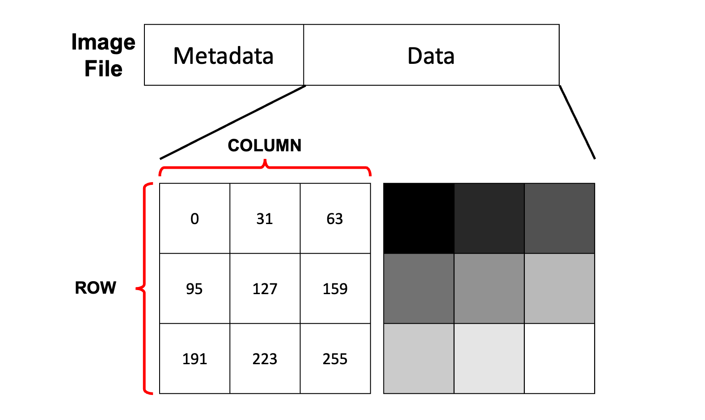
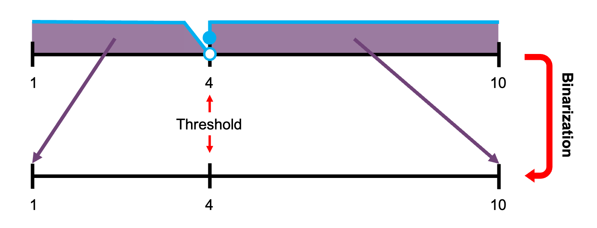
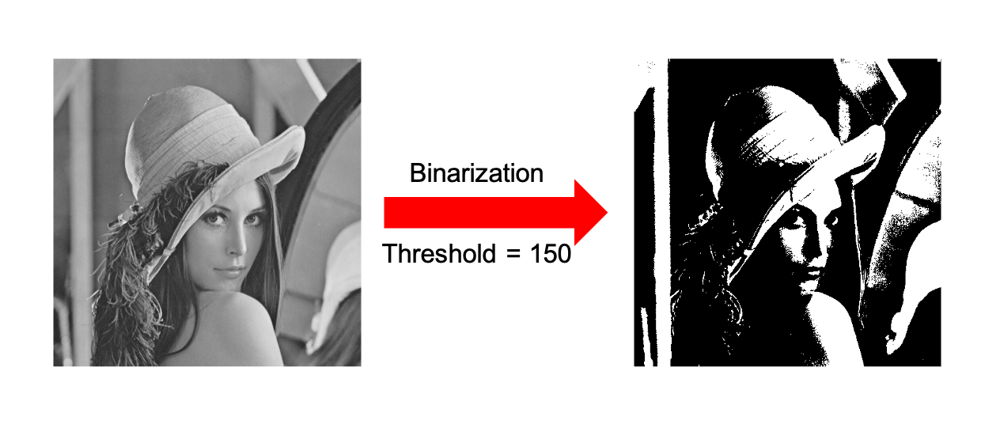
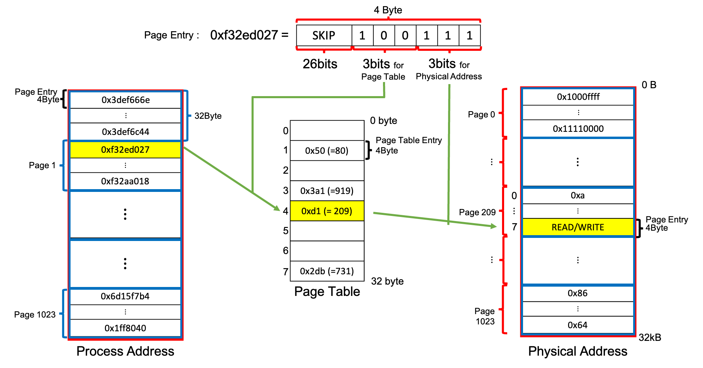
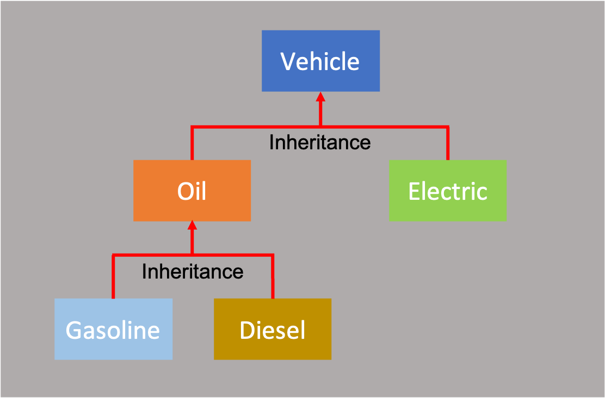

위의 버튼들 중 학습한 강의의 버튼을 눌러주세요. 해당 강의에 대한 문제가 나옵니다. 영어 버전으로 풀고 싶다면, 언어 전환 버튼을 눌러주세요.
Please click a button you have learned among the above buttons. Some problems for the lecture will be appeared. If you want to read and solve the problems in Korean, then please press the button of languange change.
1강 예제
Lecture 1 Exercises
1. 표준 입출력 연습
1. Standard Input & Output Practice
첫 번째 연습문제에 잘 오셨습니다. 먼저, 여러분들이 포기하지 않고 강의와 연습문제를 끝까지 완강하시기를 기원합니다. 여러분들은 표준 입출력을 연습하셔야 합니다. 사용자들의 정보를 입력받고 출력해주는 코드를 작성해봅시다. 사용자들의 정보에는 이름, 나이, 출신 지역이 포함됩니다. 출력 예시를 참고해 구현해봅시다.
Welcome to the first example problem. Most of all, I wish you complete all of lectures and problems. You must practice standard input and output. Let's write a program which prompts the user enter the user information and displays them. User information includes a name, age and hometown. Please refer to the expected output.
출력 예시
The Expected Result
Enter Your First Name: Jacob
Enter Your Age: 25
Enter Your Hometown: Seoul
<USER: Jacob>
Age: 25 / Hometown: Seoul
2. 연습문제 컴파일 및 실행
2. Compile and Excute an Example Problem
연습 문제를 푸신 후에 컴파일 및 실행을 위해서 강의에서와 같이 sh do.sh를 사용하면, 컴파일 및 실행이 되지 않을 수도 있습니다.
예를 들어 여러분이 연습문제를 풀기 위해 새로 만든 파일이 p1_1.cpp이라고 가정해봅시다.
그리고 이 파일이 여러분이 강의를 들을 때 만든 폴더에 들어있어 강의시에 만든 파일 main.cpp이 같이 있다고 생각해봅시다.
아래와 같은 구조라고 생각해봅시다.
그리고 여러분의 파일구조가 다음과 비슷하게 연습문제 파일이 main.cpp와 같이 있다면, Makefile을 수정해주셔야 합니다.
If using the command sh do.sh used in the lecture after making your own program code, then you might face a compile error.
For example, assume that there is a new file p1_1.cpp for the problem.
Also, suppose that there is an existing file main.cpp in the folder made during the lecture.
Specifically, please watch the following file structure about your C++ files.
If your files have a similar structure (main.cpp and p1_1.cpp exist in the same folder), then you should modify your Makefile.
YouTube
└─ 1
├─── main.cpp
├─── p1_1.cpp
├─── Makefile
└─── do.sh
Makefile을 다음과 같이 수정하고 sh do.sh 명령어를 입력해주세요.
Please modify your Makefile like the following code and execute the command sh do.sh
CMP = g++
TARGET = runfile
OBJS = p1_1.o
all: $(TARGET)
$(TARGET) : $(OBJS)
$(CMP) -o $@ $^
.cpp.o :
$(CMP) -c -o $@ $<
2강 예제
Lecture 2 Exercises
1. 구의 속성 계산하기
1. Evaluate Properties of Sphere
구의 반지름을 입력받아 구의 속성들을 계산해주는 프로그램을 작성해봅시다. 구의 속성들에는 구의 겉넓이와 부피가 포함됩니다. 관련 수식은 아래를 참고해주세요.
Let's make a program that prompts the user to enter a radius of a sphere and evaluate properties of the sphere. The properties include its surface area and volume. Please refer to the related equations.
$$A=4\pi r^{2},$$ $$V=\frac{4}{3} \pi r^{3}$$
위의 수식을 참고해 아래와 같은 입출력 결과가 도출되도록 프로그램을 짜봅시다.
Please implement a program to derive the expected input and output result like the below referring to the above equations.
출력 예시
The Expected Result
Enter a Radius: 10
Spherical Surface Area: 628.3186
Spherical Volume: 1047.1976
2. Overflow와 Underflow 감지하기
2. Detect Overflow and Underflow
You Can C++ 2강에서 배운 바와 같이 Overflow와 Underflow는 해당 프로그램에 매우 치명적인 영향을 끼칠 수 있습니다. 왜냐하면, 계산 결과 값 자체를 완전히 바꿔버릴 수 있기 때문입니다. 그렇다면 Overflow나 Underflow가 발생할 수 있을 것으로 예상이 가는 부분에서는 계산 결과로부터 Overflow나 Underflow 이슈를 확인해봐야 할 것입니다. 이번에는 특정 계산 결과에 대해서 Overflow가 발생했는지 혹은 Underflow가 발생했는지 아니면 안전한 값인지 확인하는 코드를 만들어봅시다.
As mentioned in the 2nd lecture, an overflow and underflow could give a very lethal impact on a program. Because the computation result could be totally changed. Therefore, a program should check the result of the part that the overflow or underflow are expected. Let's make your own program to check if the computation value is overflowed, underflowed or secure.
출력 예시 (1)
The Expected Result (1)
Computation Result: 999999999999
Overflow출력 예시 (2)
The Expected Result (2)
Computation Result: -1
Underflow출력 예시 (3)
The Expected Result (3)
Computation Result: 1234
SecureOverflow와 Underflow를 감지하기 위해서는 각각의 Data Type이 나타낼 수 있는 최댓값과 최솟값이 몇인지 알아야 합니다. 이 최댓값과 최솟값을 구하는 코드를 직접 구현해도 되고 또는 아래의 코드에서 최댓값과 최솟값을 활용하는 방식을 참고하면 되겠습니다. 여러분들이 확인하셔야 하는 Data Type은 정수형으로 고정된다고 가정합니다. 또한, Overflow와 Underflow를 발생시킬만한 연산은 아래의 코드를 참고해주세요. (참고: <limits.h>)
First of all, you must know what the maximum and minimum value of each data type is, to detect the overflow and underflow. You can implement this functionality for the maximum and minimum value or refer to the following code to get the values. Let assume that the data type you should check is fixed on integer data types. Also, please refer to the computations expected to cause the overflow or underflow. (Reference: <limits.h>)
참조 코드: p2_2.cpp
Reference Code: p2_2.cpp
#include <limits.h>
#include <iostream>
#include <cmath>
int main(){
std::cout << INT_MAX << std::endl; // for the maximum of int
std::cout << INT_MIN << std::endl; // for the minimum of int
int a=1, b=-2, c=5;
int i=5, j=7, k=15, x=9;
a << (sizeof(int)*4 - 1); // Expected Computation Warning 1
b >> 1; // Expected Computation Warning 2
exp(k); // Expected Computation Warning 3
120*log2(1+exp(i)*pow(3,j)/k); // Expected Computation Warning 4
c*pow(x,3) + b*pow(x,2) + a*x; // Expected Computation Warning 5
return 0;
}
3. 대출의 액면가 구하기
3. Evaluate a Face Value of Loan
이번 문제는 경제와 수학에 가까운 문제입니다. 소비자 대출 협상은 그렇게 간단하지만은 않다. 대출의 한 형태는 다음과 같이 작용하는 할인 할부 대출이라고 가정하자. 한 대출이 액면가 $1,000에 5% 이자율과 24개월의 존속 기간을 가지고 있다. 이자는 액면가 $1,000에 0.05를 곱한 $50이다. 전체 이자는 이자 $50에 존속기간 2년을 곱해 $100이다. 액면가로부터 이 액수를 공제하면, 소비자의 대출금은 $900이다. 액면가를 기반으로 계산한 월 할부금은 $1,000를 24로 나눈 $41.67이다. 액면가만을 통해 계산한 소비자 대출금은 $900를 필요로 하는 소비자에게는 좋겠지만, $2,000를 필요로 하는 소비자에게는 다른 방식으로 액면가를 계산해야한다. 즉, 소비자 대출금 $2,000에 맞추어서 계산을 달리해야 한다. 소비자가 받기 원하는 액수, 이자율, 대출 존속 기간 이렇게 3개의 입력을 받은 후, 소비자를 위해 요구되는 액면가를 계산하는 프로그램을 만들어보자. (입출력 예시를 참고해주시기 바랍니다.)
This problem is close to the economy and mathematics. A negotiation of a customer loan is not that simple. Suppose that one form of loan is operated as a discount installment loan. The loan policy has a face value $1,000, an interest rate 5% and 24 months of duration. Interest is $50 that the face value of $1,000 is multiplied by 0.05. Total interest is a value, $50 in interest multiplied by 2 years of life, equal to $100. If the total interest is deducted from the face value, the loan of the client is $900. The monthly installment based on the face value is $41.67, which is $1,000 divied by 24. It is good for a client who want to loan $900, however the face value is evaluted in another way for a client who needs $2,000. In other words, the face value should be calculated for the standard of the client loan of $2,000. Let's make a program that computes the required face value for the client after receiving 3 values of the amount of the loan the client wants, installment rate, and the loan period. (Please, refer to the expected input and output example.)
입출력 예시 (1)
The expected IO example (2)
A retail baking loan amount ($): 2000
An interest rate (%): 5
A loan period (month): 24
<Expectated Info>
A face value ($): 2222.22
A monthly installment ($): 83.33입출력 예시 (2)
The expected IO example (3)
A retail baking loan amount ($): 0
An interest rate (%): -1
A loan period (month): 24
<Expectated Info>
ERROR: Wrong Input3강 예제
Lecture 3 Exercises
1. 패턴 분석하기
1. Analyze a Pattern
숫자 하나를 층으로써 입력을 받아 다음과 같은 패턴을 출력해주는 프로그램을 구성해보자. 다음의 출력 예시를 참고해서 패턴을 분석하여 정상 동작하는 프로그램을 만들어 보자.
Let's make your own program that the user is promted to enter one number as a height and it displays a pattern such as the following example. Please refer to the expected output for a normal operation.
입출력 예시
The Expected Input & Output Result
Enter a Height: 4
1010101
10101
101
1
Enter a Height: 3
10101
101
1
Enter a Height: -1
Program Terminated.
2. 변형된 FizzBuzz 게임
2. A Variation of FizzBuzz Game
혹시 FizzBuzz 게임에 대해서 들어보셨나요? FizzBuzz게임은 3의 배수에서는 Fizz를, 5의 배수에서는 Buzz를 그리고 3과 5의 공배수에서는 FizzBuzz를 출력하는 게임입니다.
이 FizzBuzz 게임을 약간 변형시켜 Fizz,Buzz 또는 FizzBuzz에 해당하는 경우에 해당 숫자가 홀수인지 짝수인지 그 옆에 같이 출력해줄 수 있는 프로그램을 작성해봅시다.
여러분들의 프로그램은 FizzBuzz 게임을 실행할 영역을 지정해주기 위해 두 개의 숫자를 입력받아야 합니다.
A FizzBuzz game is a game which print Fizz at multiples of 3, Buzz at multiples of 5, and FizzBuzz at common multiples of 3 and 5.
Let's make a slight variation of this FizzBuzz game.
Write a program next to Fizz,Buzz, or FizzBuzz that can print out if the number is odd or even.
Please refer to the expected input and output result.
Your program must prompt the user to enter two input numbers to specify a range to execute the FizzBuzz game.
입출력 예시
The Expected Input & Output Result
From 10
Up to 20
Buzz even
11
Fizz even
13
14
FizzBuzz odd
16
17
Fizz even
19
Buzz even
3. 변형된 카이사르 암호 풀기 (심화)
3. Solve a Variation of Caesar Cipher (Advanced)
카이사르 암호는 여러분들이 살아가면서 한 번쯤은 들어봤은 고전 암호 기법입니다. 카이사르 암호는 알파벳을 일정 칸만큼 밀어서 다른 알파벳에 대응시키는 암호화 방식입니다. 다시 말해, abcde...를 오른쪽으로 3칸을 민다고 가정하면, xyzab...의 순서로 알파벳을 사용하는 방식입니다. 예를 들어, LOVE라는 단어를 암호화하면, ORZH라는 글자가 나오게 됩니다.
Caesar cipher is an ancient encryption method that you have heard at least once in your whole life. This cipher is a method to shift and replace alphabets as many times as a constant number. In other words, if the alphabets abcde... are shifted right three, the alphabets of the order of xyzab... are generated and replaced. For example, we can encrypt a word of 'LOVE' into 'ORZH'.
이제 이 카이사르 암호를 변형하고자 합니다. 가장 먼저, 일반적인 카이사르 암호는 대소문자를 구분하지 않지만 여러분들의 프로그램은 대소문자를 구분할 수 있어야 합니다. 즉, ABCDE...vwxyz 알파벳을 오른쪽으로 3칸 밀면, xyzAB...stuvw의 알파벳으로 변경되어야 합니다. 추가적으로 알파벳을 알파벳으로 변경하는 것이 아닌 알파벳을 숫자로 대체하셔야 합니다. 아래의 예시를 보면, ABCDE를 xyzAB로 대치한 후에 50/51/52/1/2로 다시 숫자로 암호화해야 합니다. 대문자 그리고 소문자 알파벳 순서대로 1,2,3,...50,51,52의 값으로 대치되어야 합니다. 따라서 원본 문자와 암호 문자를 비교해보면, Shift Right 3를 한 경우에 A는 50, B는 51, ... 의 값을 가져야 합니다.
From now, this Caesar cipher will be variated. Most of all, the general Caesar cipher does not distinguish upper and lower cases, however your program should be able to distinguish them. Therefore, if the alphabets ABCDE...vwxyz is shifted right by three, they will be replaced with xyzAB...stuvw. Your program must additionally replace the alphabets with not the alphabets but the numbers. For the following example, after replacing ABCDE with xyzAB, your program should encrypt it into the number like 50/51/52/1/2. The alphabets should be replaced by 1,2,3,...50,51,52 in order of uppercase and lowercase. Therefore, in the case of shifting right 3, A has 50, B has 51, ..., comparing it with the original alphabets.

카이사르 암호의 변형 과정
A Procedure of Variation of Caesar Cipher
ABCDE -> xyzAB -> 50,51,52,1,2
아래의 출력 예시와 예시 코드를 참고해서 다음과 같은 프로그램을 만들어봅시다.
하나의 문자열을 입력받은 후에 SHIFT_P와 SHIFT_R의 값을 이용해 위에서 설명한 변형된 형태의 카이사르 암호로 암호화하는 프로그램을 만들자.
문자열을 입력받는 코드는 예시 코드에 구현되어 있습니다.
(단, 띄어쓰기가 없는 문자열만을 고려한다.)
Refering to the following the expected result and example code, please make a program to follow the following rules.
After the user entering one character sequence, your program should encrypt the input string into the variated Caesar cipher mentioned above through SHIFT_Pand SHIFT_R.
An operation for the user to be prompted to enter the character sequence is implemented in the example code.
(However, consider a string only which does not have any space.)
입출력 예시
The Expected Input & Output Result
Shift: right 5
Original Letters: iLOVEu
After Encryption: 30 7 10 17 52 42
예시 코드: p3_1.cpp
Example Code: p3_1.cpp
#include <iostream>
#define SHIFT_P 5 // For the shift position
#define SHIFT_R true // If (true), shift right. If not, shift left.
int main(){
char origin[100];
std::cout << "Shift: " << (SHIFT_R == true ? "right " : "left ")
<< SHIFT_P << std::endl;
std::cout << "Original Letters: ";
std::cin >> origin;
std::cin.clear();
/* Your Encryption Code */
return 0;
}
char str[100];
std::cin >> str; // Assume: the input is 'ABCD'
str[0] = 'a'; // Assignment: Okay
std::cout << str[100] << std::endl; // Get: Error
std::cout << str[1] << std::endl; // Get: Okay
std::cout << str << std::endl;4강 예제
Lecture 4 Exercises
1. 코드 결과 유추하기
1. Guess The Result of a Program
다음 코드의 결과를 유추해보자.
그리고 각각의 라인 PTE_ADDR, PTE_FLAGS, FLAG_STATE 각각이 무엇을 의미하는지 서술해보자.
Let's guess the result of the following code.
Also, try describing the meanings of each line PTE_ADDR, PTE_FLAGS, and FLAG_STATE.
문제 코드의 결과를 유추하기 이전에 <bitset> 라이브러리의 사용법을 알아야 합니다.
이 라이브러리의 한 함수는 정수를 2진수의 문자열로 변환해 리턴합니다.
가령, std::bitset<4>(5)와 같은 형식으로 사용한다면, 5는 2진수로 00101이지만 하위 4개의 비트를 리턴해야 하므로 0101을 리턴합니다.
또 다른 예시로, std::bitset<8>(100)은 01100100을 리턴합니다.
Before guessing the result of the following problem code, you must understand how to utilize a library of <bitset>.
One function of this library returns a character sequence which an integer number is converted into.
For example, in the case of std::bitset<4>(5), 5 is equal to 00101 as a binary basis, but the function should return a character sequence number of the least significant 4 bits.
Plus, std::bitset<8>(100) returns the 01100100.
문제 코드: p4_1.cpp
Problem Code: p4_1.cpp
#include <iostream>
#include <bitset>
/* Macro Constants */
#define PTE_P 0x001 // PTE_P stands for Page Table Entry_Present
#define PTE_W 0x002 // PTE_W stands for Page Table Entry_Writeable
#define PTE_U 0x004 // PTE_U stands for Page Table Entry_User
/* Macro Function */
#define PTE_ADDR(pte) ((unsigned int)(pte) & ~0xFFF)
#define PTE_FLAGS(pte) ((unsigned int)(pte) & 0xFFF)
/* Normal Function */
const int flag_check(const unsigned int pte){ return PTE_FLAGS(pte); }
int main(){
unsigned int addr1 = 0x45bd3aa1; // Binary: 01000101101111010011101010100001 (32 bits)
unsigned int addr2 = 0x193acd1e; // Binary: 00011001001110101100110100011110 (32 bits)
printf("PTE_ADDR: %X\n", PTE_ADDR(addr1));
std::cout << "PTE_FLAGS: " << std::bitset<12>(flag_check(addr1)) << std::endl;
std::cout << "FLAG STATE: " << std::bitset<4>((addr1 & PTE_P) + (addr1 & PTE_W) + (addr1 & PTE_U)) << std::endl;
printf("\nPTE_ADDR: %X\n", PTE_ADDR(addr2));
std::cout << "PTE_FLAGS: " << std::bitset<12>(flag_check(addr2)) << std::endl;
std::cout << "FLAG STATE: " << std::bitset<4>((addr2 & PTE_P) + (addr2 & PTE_W) + (addr2 & PTE_U)) << std::endl;
return 0;
}
곧 공개됩니다.
Released Soon
2. 중복되는 이름의 서로 다른 함수 독립시키기 (코드 채워넣기)
2. Separate the Different Functions of the Same Name (Filling the Code)
이번 문제는 중복되는 이름의 서로 다른 기능을 분리하는 연습문제입니다.
예를 들어, 택시와 버스 사용에 대한 프로그램을 만든다고 가정해봅시다.
택시와 버스는 모두 대중교통이므로 운행 거리에 따른 비용과 운행 거리에 따라 걸리는 시간이 존재합니다.
하지만, 택시와 버스는 적용되는 정책이 다르기 때문에 구현을 서로 다르게 해야 합니다.
이 둘은 모두 동일한 이름의 함수들인 운행 거리에 따른 비용 fareByDistance(distance) 그리고 운행 거리에 따라 걸리는 시간 timeCostByDistance(distance)이 각각 존재합니다.
This problem has an objective to separate the functions which have the duplicated names but the different functionalities.
For example, let it suppose that you make a program on using taxis or buses.
They are included in public transportations so that there are a fare by the distance and a time cost by the distance.
However, the implementations for them should not be identical because they have different policies.
They respectively have two functions of the same names, fareByDistance(distance) and timeCostByDistance(distance).
택시와 버스에 적용되는 정책은 다음의 설명과 아래의 수식을 참고하면 됩니다. 택시의 경우, 운용 요금 책정은 다음과 같습니다. 운행 거리가 1km 이하라면 기본요금 3$를, 그 이상이라면 1-c의 계산식을 통해 요금이 계산됩니다. 또한 예상 소요 시간은 운행 거리를 예상되는 택시의 평균 속력인 45[km/h]로 나눈 값(2-c)입니다. 버스의 운용 요금 책정은 운행 거리가 1.5km 이하라면 기본요금 1$를, 그 이상이라면 1-c의 계산식을 통해 요금이 계산됩니다. 또한 예상 소요 시간은 운행 거리를 예상되는 버스의 평균 속력인 45[km/h]로 나눈 값에 정류장에서의 예상 지연시간을 더한 값(2-c)으로 계산 됩니다.
Please refer to the following explanation and below equation about the applied policies for the taxis and buses. In the case of the taxis, it follows a basic charge 3$ for a movement distance shorter than 1km and 1-c evaluating equation for the movement distance longer than 1km. Also, the expected time cost is evaluted by dividing the movement distance by the expected average speed of a taxi, 45[km/h] (2-c). In the case of the buses, it follos a basic charge 1$ for a movement distance shorter than 1.5km and 1-c evaluating equation for the movement distance longer than 1.5km. Also, the expected time cost is evaluted by dividing the movement distance by the expected average speed of a bus, 45[km/h] and adding the expected delay time at some bus stops (2-c).
Taxi Case
1. const float fareByDistance(const int d);
a. d = distance [m]
b. (d < 1km) -> 3$
c. (d > 1km) -> 3$ + (d - 1000)*0.5/200$
2. const float timeCostByDistance(const int d);
a. d = distance [m]
b. t = time cost [min]
c. t = d*60/45000
Bus Case
1. const float fareByDistance(const int d);
a. d = distance [m]
b. (d < 1.5km) -> 1$
c. (d > 1.5km) -> 1$ + (d - 1000)*0.3/400$
2. const float timeCostByDistance(const int d);
a. d = distance [m]
b. t = time cost [min]
c. t = d*60/45000 + d*0.8/400
이렇게 동일한 이름의 함수가 필요하지만 구현을 다르게 해야 할 때, 일반적으로 namespace를 사용하기도 합니다.
아래의 코드는 이 아이디어를 통해 구조적으로 일부를 구현한 모습입니다.
/* Fill The Code */라고 적혀있는 부분을 정상적으로 동작하도록 구현해봅시다.
Like the explanation when a program requires some functions of the identical names but should be implemented differently, generally namespace might be used.
The following skeleton code is structurely and partially implemented through this idea.
#include <iostream>
#include <iomanip>
namespace TAXI{
const float fareByDistance(const int d);
const float timeCostByDistance(const int d);
}
namespace BUS{
const float fareByDistance(const int d);
const float timeCostByDistance(const int d);
}
const float TAXI::fareByDistance(const int d){
/* Fill The Code */
}
const float BUS::fareByDistance(const int d){
/* Fill The Code */
}
const float TAXI::timeCostByDistance(const int d){
/* Fill The Code */
}
const float BUS::timeCostByDistance(const int d){
/* Fill The Code */
}
int main(){
/* This Section Is For The Test */
/* You Do Not Have To Revise This Section */
const int taxi_d_1 = 800, taxi_d_2 = 2500;
std::cout << "TAXI Case --- Test 1" << std::endl;
std::cout << "Fare : " << std::setprecision(3) << TAXI::fareByDistance(taxi_d_1) << "$" << std::endl;
std::cout << "Time Cost: " << std::setprecision(3) << TAXI::timeCostByDistance(taxi_d_1) << "min" << std::endl;
std::cout << "\nTAXI Case --- Test 2" << std::endl;
std::cout << "Fare : " << std::setprecision(3) << TAXI::fareByDistance(taxi_d_2) << "$" << std::endl;
std::cout << "Time Cost: " << std::setprecision(3) << TAXI::timeCostByDistance(taxi_d_2) << "min" << std::endl;
const int bus_d_1 = 2000, bus_d_2 = 65000;
std::cout << "\nBus Case --- Test 1" << std::endl;
std::cout << "Fare : " << std::setprecision(3) << BUS::fareByDistance(bus_d_1) << "$" << std::endl;
std::cout << "Time Cost: " << std::setprecision(3) << BUS::timeCostByDistance(bus_d_1) << "min" << std::endl;
std::cout << "\nBus Case --- Test 2" << std::endl;
std::cout << "Fare : " << std::setprecision(3) << BUS::fareByDistance(bus_d_2) << "$" << std::endl;
std::cout << "Time Cost: " << std::setprecision(3) << BUS::timeCostByDistance(bus_d_2) << "min" << std::endl;
return 0;
}예상 결과
The Expected Result
TAXI Case --- Test 1
Fare : 3.00$
Time Cost: 1.07min
TAXI Case --- Test 2
Fare : 6.75$
Time Cost: 3.33min
BUS Case --- Test 1
Fare : 1.75$
Time Cost: 6.67min
BUS Case --- Test 2
Fare : 49.0$
Time Cost: 216min
5강 예제
Lecture 5 Exercises
1. OX 퀴즈
1. OX Quiz
다음의 문장이 옳다면 O를, 아니라면 X를 표시하라.
해당 OX 문제들은 이론적 배경에 대한 이해를 돕기위한 문제들입니다.
If the following statements are true, write O, and if false write X.
The following T/F quizzes were set to encourage the learner to understand the theoretical backgrounds.
1. Unmanaged Language가 필요한 이유는 대체적으로 속도가 더 빠르기 때문이다.
1. The unmanaged Languages are required because generally faster than other languages.
2. 성능이 가장 좋은 저장 장치는 Cache Memory이다.
2. The Cache Memory has the best performance among the memory hardwares.
3. CPU는 DRAM에 가장 빨리 접근할 수 있다.
3. CPU can access DRAM fastest.
4. Clock Frequency가 1.6GHz인 Multi-Core CPU는 1초에 $$1.6\times 10^{9}$$개까지의 Instruction (연산)이 가능하다.
4. A multi-core CPU which has a clock frequency 1.6GHz can operate upto $$1.6\times 10^{9}$$ instructions (operations) in 1 second.
5. C++ 프로그램을 만든 후에 실행시키면, 해당 프로세스(프로그램)의 메모리 영역에 존재하는 Code Section (Text Section)이 프로그램 실행중에 수정될 수 있다.
5. When a C++ program is executed after made, a code section (text section) on its memory realm of the process (program) can be modified during the execution.
6. CPU가 Main Memory에 접근하는 횟수가 적을 수록 프로그램 속도가 빠르다.
6. The less a CPU access the main memory, the faster the speed of the program is.
7. 비교 조건이 많은 경우에는 if ~ else 문보다 switch ~ case 문을 사용하는 것이 더 좋다.
7. In the case that has many comparison conditions, switch ~ case is better than if ~ else.
2. 코드 재구성하기
2. Restruct the Program Code
다음 코드는 실시간으로 시간이 변하는 시계를 만든 프로그램이다.
코드를 대략적으로 살펴보고 Coding Style을 참고해서 이상한 점이 있다면 동일한 기능을 수행하면서 더 좋은 코딩 스타일로 바꾸는 연습을 해보자.
(각 코드 라인이 어떤 동작을 하는지 분석할 필요는 없다. 그것을 방지하기 위해 일부러 어려운 코드를 넣어 놓았다. 간단한 주석과 코드의 흐름을 보는 방식으로 살펴보면 된다.)
그리고, 모든 기능이 하나의 파일에 구현되어 있다. 이는 실제 프로젝트에서 좋은 습관이 절대 아니다.
main.cpp에 구현되어 있는 함수들을 헤더 파일로 빼내어서 clock.h, clock.cpp의 파일들을 재구성하는 연습을 하자.
단, 기능 자체를 수정할 필요는 없다. 즉, 프로그램의 구조를 재구성하는 것이다.
궁극적으로 다음의 총 3개의 파일인 main.cpp, clock.h, clock.cpp로 코드를 분리해서 프로그램을 구성해야 한다.
(고급 단계, 옵션) 각 함수에 주석을 다는 연습도 함께 해보자.
The following code is a program that a clock which changes the time in real-time is implemented.
Practice restructing the code for a better coding style maintaining the identical functions, as referring to the coding style guide and after looking around the code.
(You need not to analyze all operations of each code line. To protect it, I have made the program with the difficult syntax on purpose. You can check the simple comments and the flow of the code.)
Also, all functions are implemented in one file. This is never a good habit for the realistic projects.
Extract and separate the functions which is implemented in main.cpp into two files, clock.h and clock.cpp so that restruct the program structure.
However, you do not have to revise the functionalities themselves.
Ultimately, you need to separate the given codes into the following three files (main.cpp, clock.h, and clock.cpp) and constitute the program.
Practice adding some comments for each function (for advanced and optional).
main.cpp
main.cpp
#include <iostream>
#include <ctime> // for time_t
#include <chrono>
#include <iomanip>
#include <string>
void BackspaceN(const unsigned int n){
for (int i=0; i<n; ++i) printf("\b"); // cursor backspace
for (int i=0; i<n; ++i) printf(" "); // fill space
for (int i=0; i<n; ++i) printf("\b");
}
void DisplayCurrentTime12(){
std::chrono::time_point<std::chrono::system_clock> now;
now = std::chrono::system_clock::now(); // get current system clock
std::time_t now_time, old_time;
now_time = std::chrono::system_clock::to_time_t(now); // change system clock into time
while(1){
std::cout << std::put_time(std::localtime(&now_time), "%r") << std::flush; // print local time with a format of 12-hour clock.
old_time = now_time; // to check change of time
do{ // check polling
now = std::chrono::system_clock::now();
now_time = std::chrono::system_clock::to_time_t(now);
} while (now_time == old_time);
BackspaceN(12); // backspace
}
}
void DisplayCurrentTime24(){
std::chrono::time_point<std::chrono::system_clock> now;
now = std::chrono::system_clock::now(); // get current system clock
std::time_t now_time, old_time;
now_time = std::chrono::system_clock::to_time_t(now); // change system clock into time
while(1){
std::cout << std::put_time(std::localtime(&now_time), "%T") << std::flush; // print local time with a format of 12-hour clock.
old_time = now_time; // to check change of time
do{ // check polling
now = std::chrono::system_clock::now();
now_time = std::chrono::system_clock::to_time_t(now);
} while (now_time == old_time);
BackspaceN(9); // backspace
}
}
void DisplayCurrentTime(bool toggle_12_hour){
// toggle_12_hour == True : 04:52:34 PM
// toggle_12_hour == False : 16:52:34
if (toggle_12_hour) DisplayCurrentTime12(); // 12-hour clock
else DisplayCurrentTime24(); // 24-hour clock
}
int main(){
char ans;
std::cout << "Toggle AM/PM? (Y/n)";
std::cin >> ans;
if (ans == 'Y' || ans == 'y') DisplayCurrentTime(true); // toggle on
else if (ans == 'N' || ans == 'n') DisplayCurrentTime(false); // toggle off
else{ // Error Message
fprintf(stderr, "(Wrong Input) usage: <y/N>\n");
return 1;
}
return 0;
}
// Reference: https://en.cppreference.com/w/cpp/io/manip/put_time6강 예제
Lecture 6 Exercises
1. 16진수의 비트 분해
1. Bits Separation for Hexadecimal
6번째 강의에서 2진수를 분해하는 예시를 보고 공부한 적이 있다.
이번 문제는 확장된 예시로 16진수를 분해하는 문제이다.
16진수 숫자는 16진수 숫자임을 나타내는 접두어 0x를 사용해서 표현한다.
예를 들어, 0xABC123이라는 숫자에서 0x는 그 이후의 값인 ABC123가 16진수 표현임을 의미한다.
이 숫자를 10진수로 변환하면, 다음과 같은 과정을 통해서 10진수 값을 얻을 수 있다.
We've learned about the bit separation for a binary number from the 6th lecture.
This problem represents the bit separation for a hexadecimal number as an extended example.
Hexadecimal numbers are expressed with a prefix 0x.
For example, for a number 0xABC123, 0x means that ABC123 after the prefix is written by the hexadecimal number system.
We translating this number into a decimal number, then the decimal value is calculated following the below step.
$$$ 16^{5} \times 10 + 16^{4} \times 11 + 16^{3} \times 12 + 16^{2} \times 1 + 16^{1} \times 2 + 16^{0} \times 3 = 11,256,099 $$$
주어진 수인 0xABC123를 16진수 형태에서 이분할하면, 0xABC 그리고 0x123으로 나눌 수 있다.
이분할한 16진수는 아래의 계산식을 참고하면 10진수로 각각 2,748과 291을 나타낸다.
If separating the given hexadecimal number 0xABC123 into two parts with the hexadecimal form, we can get numbers, 0xABC and 0x123.
These hexadecimal numbers respectively represent 2,748 and 291 with the decimal form referring to the following equation.
$$$ 16^{2} \times 10 + 16^{1} \times 11 + 16^{0} \times 12 = 2,748 $$$ $$$ 16^{2} \times 1 + 16^{1} \times 2 + 16^{0} \times 3 = 291 $$$
0xFE987과 같이 16진수 자릿수($$n$$)가 홀수개인 경우에는 주어진 수의 앞쪽을 $$\frac{n-1}{2}$$개로 그리고 뒤쪽을 $$\frac{n+1}{2}$$개로 분할해야 한다.
즉, 0xFE와 0x987과 같이 앞쪽을 짧게, 뒤쪽을 길게 분할하면 된다.
그리고 이렇게 이분할한 16진수는 아래의 계산식을 참고해 10진수로 각각 254와 2,439를 나타낸다.
Plus, hexadecimal numbers like 0xFE987, which have odd hexadecimal digits, must be separated into $$\frac{n-1}{2}$$ hexadecimal digits for the front part and $$\frac{n+1}{2}$$ hexadecimal digits for the rear part.
Therefore, this hex number can be partitioned, shorter for the front and longer for the rear, with 0xFE and 0x987.
$$$ 16^{2} \times 0 + 16^{1} \times 15 + 16^{0} \times 14 = 254 $$$ $$$ 16^{2} \times 9 + 16^{1} \times 8 + 16^{0} \times 7 = 2,439 $$$
사용자로부터 문자열의 형태로 16진수를 입력받은 뒤에 그 수를 분할하고 아래의 입출력 예시처럼 출력하는 프로그램을 만들어보아라.
16진수를 분할하는 방식은 위에서 설명된 방식을 따른다.
단, 16진수의 크기는 128bit(2진수 변환시)로 제한한다.
또한, 16진수를 나타내는 접두어(0x 또는 0X) 유무 그리고 숫자의 대소문자에 상관없이 16진수로 간주한다.
프로그램 구현을 위해서 주어진 스켈레톤 코드를 참조하라(스켈레톤 코드에는 프로그램 구현에 도움이 될 수 있는 함수가 작성되어 있고 그 예시가 있으며 더 자세한 설명을 위해서는 참조 버튼을 통해 확인하라).
Write a program to print out the partitioned numbers after prompting the user to enter a hexadecimal number with a character sequence form like the following examples.
There are some constraints for the hexadecimal separation.
First, the size of the hexadecimal number is limited to up to 128 bits for the maximum.
Second, the input numbers are considered as hexadecimal numbers regardless of the prefix(0x or 0X)'s existance and case-sensitivity.
Please refer to the skeleton code for the program implementation (some functions, which might be helpful, are implemented).
입출력 예시
Input & Output
Enter a Hexadecimal Number: 0XABC123
[1] 0xabc = 2748
[2] 0x123 = 291
Enter a Hexadecimal Number: 0xfe987
[1] 0xfe = 254
[2] 0x987 = 2439
Enter a Hexadecimal Number: 123456
[1] 0x123 = 291
[2] 0x456 = 1110
Enter a Hexadecimal Number: abcdefgh
[Error] Out of Range
스켈레톤 코드: p6_1.cpp
Skeleton Code for p6_1.cpp
#include <iostream>
#include <algorithm> // for std::transform
#include <cctype> // for ::tolower, ::toupper
#define MAX_LEN /*Your Implementation*/
#define LOWER(C) std::transform(C, C+MAX_LEN, C, ::tolower)
#define UPPER(C) std::transform(C, C+MAX_LEN, C, ::toupper)
int main(){
char hex[MAX_LEN];
std::cout << "Enter a Hexadecimal Number: ";
std::cin >> hex;
/* Your Implementation */
/* ## You Can Use the Given Function like the Following Example ##
* char str[10] = "HellO";
* LOWER(str);
* std::cout << str << std::endl; // Result: hello
* // or //
* char str[10] = "HellO";
* UPPER(str);
* std::cout << str << std::endl; // Result: HELLO
*/
/* Your Implementation */
return 0;
}
char str[10] = "HeLlO";
LOWER(str);
std::cout << str << std::endl;
2. 포인터로 배열 접근하기 (이미지 처리)
2. Access to Array with Pointer (Image Processing)
컴퓨터에서 어떠한 파일을 저장할 때는 크게 2가지의 영역으로 나뉜다. 바로 메타데이터(Metadata)라고 불리는 영역과 실제 데이터(Data) 영역이다. 이 영역 분할은 거의 모든 파일 포맷에 대해서 공통적으로 적용이 되는데, 메타데이터는 해당 파일과 데이터 영역에 대한 속성 정보를 지닌다. 이미지 파일의 경우, 메타데이터에는 해당 이미지가 가로-세로 몇 픽셀을 갖는지, 흑백 이미지인지, 데이터 크기가 얼마나 되는지 등등의 정보를 지닌다.
When the computer save any files, they roughly consists of two parts, which are metadata section and data section. This section separation is applied to almost all file formats and metadata has information for the file and the data section. In the case of an image file, the metadata might have information about what pixels it has for a width and height, if it has gray scale, how big size it has and etc.
파일 확장자에 따라서 '메타데이터+데이터'형식과 '데이터+메타데이터'형식으로 존재할 수 있다.
컴퓨터는 파일 확장자와 메타데이터의 정보에 따라서 데이터 해석 방식을 정한다.
이미지의 경우 가장 간단한 형태중의 하나가 비트맵(Bitmap) 이미지인데, 확장자는 .bmp를 가지며 '메타데이터+데이터'의 형식을 갖는다.
이번 문제에서는 복잡한 컬러 이미지지 대신 흑백 이미지를 가공하고자 한다.
흑백의 비트맵 이미지는 실제 데이터 영역의 데이터 값이 흑백 명암 세기를 나타낸다.
이 흑백 명암 세기는 0~255 중 하나의 값을 가지며 255가 밝은 백색이며 0이 어두운 흑색이다.
(정확히는 이렇게 보이는 것이다.)
따라서, 가로-세로에 대한 2차원 배열로 흑백의 비트맵 이미지를 표현할 수 있다.
According to the file formats, the files take one type of 'metadata+data' and 'data+metadata'.
The Computer decides a method to analyze the data with the file extension type and metadata.
In the case of images, a bitmap image is the simplest method, which has .bmp for the extension type and a type of 'metadata+data'.
This problem drives you process a gray-scale image instead of complex color images.
In the case of the gray-scale bitmap image, the numbers of the data section represent the intensity of light and shade for the gray scale.
One pixel of the data section can have one value from 0 to 255, which is light white for 255 and dark black for 0.
(It just looks like this, if describing accurately.)
Therefore, this data section can be expressed with a 2-dimensional array for the width and height.

이번 문제는 이러한 흑백 비트맵 이미지에 대해서 binarization 및 threshold 기능을 구현하는 것이 목표이다.
ROW x COLUMN(행x열) 크기의 흑백 비트맵 이미지에 대해 실제 데이터 영역에 존재하는 2차원 배열을 고려해보자.
실제 데이터는 숫자의 일자 나열이라고 생각하면 되는데, 프로그램 코드 상에서 ROW x COLUMN의 형태로 읽어들여 변수에 저장해 사용한다고 생각하면 쉽다.
threshold란, 어떤 변수가 특정 기준값 이상일 때는 특정 유효 범위 내의 최댓값을, 미만일 때는 특정 유효 범위의 최솟값을 갖도록 만드는 동작에서 이 특정 기준값을 의미한다.
그리고 이 동작을 이진화(Binarization)이라고 부른다.
가령, 어떤 변수 $$x$$가 $$ 1 \leq x \leq 10 $$의 값을 가질 수 있을때 threshold 값을 4로 설정했다고 가정하자.
변수 $$x$$가 2의 값을 갖는다면 4보다 작으므로 1을 $$x$$에 대입하고, 8의 값을 갖는다면 4보다 크므로 10을 $$x$$에 대입한다.
따라서, 이러한 동작을 Binarization이라고 부르며 이 Binarization에 필요한 기준값을 Threshold라고 할 수 있다.
이러한 기능을 하는 프로그램을 작성하라.
(단, 함수를 사용하지 않아도 된다. main 함수에 모든 동작을 구현해도 좋다. 스켈레톤 코드를 참고하면 매우 좋다.)
An ultimate goal of this problem is to implement two functionalities of binarization and threshold on the grayscale bitmap images.
Suppose that there is an array of ROW x COLUMN for the real data to exist in the data section of the grayscale bitmap image.
Like mentioned, though the real data is a sequence of numbers in a single line, it is read with a format of ROW x COLUMN by the program code and stored to a variable.
The threshold is defined as a special reference value that lets a variable take a maximum or minimum value of a valid range.
And, this operation letting the variable get a maximum or minimum value is binarization.
For example, suppose that the threshold is set as 4 when a variable $$x$$ can take a number of $$ 1 \leq x \leq 10 $$.
If $$x$$ has a value of 2, it is less than 4 so that 1 is substituted into $$x$$. Vice versa, if $$x$$ has a value of 8, it is greater than 4 so that 10 is substituted into $$x$$.
Thus, this operation is called Binarization and the reference value for the binarization is called Threshold.
Write a program to have these functionalities.
(Hint: You need not to use functions. It is better to implement all operations in the main function and refer to the skeleton code.)

스켈레톤 코드의 Do Not Touch Section에 해당하는 부분에 작성된 코드는 전혀 분석할 필요가 없다.
추후 공부하게 되는 부분이며, 분석을 하고자하면 오히려 개념 이해에 혼동을 줄 수 있다.
이미지의 순수 데이터는 스켈레톤 코드에 존재하는 변수 read_image에 존재하며, unsigned char 자료형을 지닌 [ROW][COLUMN] 크기의 배열이다.
Your Binarization Implementation 부분에 여러분 만의 Binarization 코드를 작성하면 된다.
스켈레톤 코드에서 활용할 변수와 상수는 read_image와 THRESHOLD가 전부이며 추가로 변수가 필요하다면 추가로 생성해도 괜찮다.
또한 THRESHOLD 값을 변경해가면서, Binarization 변화 양상을 관찰해보자.
문제에 사용할 이미지 파일은 아래의 다운로드 버튼을 통해 다운로드 받을 수 있다.
You should not analyze the code written in the Do Not Touch Section of the skeleton code.
You will study this section later so that it can drive you into some difficulties for the understanding if you try to figure out those sections against the advice.
The real data of the given image is stored to a variable, read_image, on the skeleton code.
Also, it is an array of the [ROW][COLUMN] size which takes unsigned char for the data type.
You must implement your own binarization code into the Your Binarization Implementation section.
The utilizable variables or constants from the skeleton codes are only a variable read_image and a constant THRESHOLD.
If something is required, it is allowed to add some variables or functions too.
Plus, observe the change aspects of the binarization according to the changes of the THRESHOLD value.
You can download the image file for the problem from the below download button.
{kind=link}

스켈레톤 코드: p6_2.cpp
Skeleton Code for p6_2.cpp
#include <iostream>
#include <cstdlib>
#include <cassert>
#define THRESHOLD 150
/** Do Not Touch Section : START **/
#define ROW 512
#define COLUMN 512
constexpr char readfilename[30] = "lena_gray.bmp";
constexpr char r_writefilename[30] = "random_input.bmp";
constexpr char writefilename[30] = "output.bmp";
char header[2048]; // Meta Data
unsigned char read_image[ROW][COLUMN], image_buffer[ROW][COLUMN];
void copyToBuffer(){
for (std::size_t i=0; i<ROW; ++i) for (std::size_t j=0; j<ROW; ++j) image_buffer[i][j] = read_image[i][j];
}
void clearBuffer(){
for (std::size_t i=0; i<ROW; ++i) for (std::size_t j=0; j<ROW; ++j) image_buffer[i][j] = 0;
}
/** Do Not Touch Section : END **/
int main(){
/** Do Not Touch Section : START **/
FILE *fpread, *fpwrite, *r_fpwrite;
fpread = fopen(readfilename, "rb"); // file open for read
fpwrite = fopen(writefilename, "wb"); // file open for write
assert((fpread != NULL) || (fpwrite != NULL));
fread(header, 1, 1078, fpread);
fread(read_image, 1, ROW*COLUMN, fpread);
/** Do Not Touch Section : END **/
//bool random = true; // for random (line 39)
bool random = false; // for lena image (line 40)
/** Do Not Touch Section : START **/
if (random) { // for random
r_fpwrite = fopen(r_writefilename, "wb"); // file open for random write
assert(r_fpwrite != NULL); // check r_fpwrite
srand(1); // Set a Random Seed
for (int idx=0; idx<ROW*COLUMN; ++idx) // Assign Random Values to read_image
*(*(read_image + idx/COLUMN) + idx%COLUMN) = rand()%256;
copyToBuffer();
fwrite(header, 1, 1078, r_fpwrite); // Store Header
fwrite(image_buffer, 1, ROW*COLUMN, r_fpwrite); // Store Random Image Data
fclose(r_fpwrite); // Save and Close
clearBuffer();
}
/** Do Not Touch Section : END **/
/* Your Binarization Implementation */
/** Do Not Touch Section : START **/
copyToBuffer();
fwrite(header, 1, 1078, fpwrite); // Store Header
fwrite(image_buffer, 1, ROW*COLUMN, fpwrite); // Store Random Image Data
fclose(fpwrite); // Save and Close
fclose(fpread);
/** Do Not Touch Section : END **/
return 0;
}
3. 포인터와 배열의 융합 (페이징 기법, 고급)
3. Combination of Pointer and Array (Paging Technique, Advanced)
(주의: Computer Science 분야의 개발자 혹은 연구자를 목표하는 분이 아니시라면 도전하지 않는 것을 추천드립니다.)
컴퓨터 운영체제를 비롯한 컴퓨터 과학 분야에는 '페이징'이라는 기법이 존재한다.
이 기법은 주어진 메모리를 고정된 크기로 일정하게 잘라서 각각의 칸을 용도에 맞게 데이터를 저장 및 이용한다.
따라서, Page들의 모임이 메모리라고 생각하면 쉽다.
이러한 Page는 Address Entry 혹은 Page Entry라고 지칭되는 데이터가 저장될 수 있는 메모리 공간들이 페이지 크기에 맞게 1개 이상 존재한다.
(예를 들어, 이번 문제에서는 32Byte 크기의 Page와 4Byte의 Page Entry들을 상정했으므로 한 개의 Page에는 8개의 Page Entry가 존재할 수 있다.)
메모리를 일정 크기로 자를 때 그 크기는 구현하기에 따라 결정되며 그 외에 여러가지 조건과 구현들이 있다.
이 페이징 기법은 Virtual Memory, Address Space, Address Translation 등의 개념을 알아야 정확하게 이해할 수 있다.
그러므로 이 페이징 기법을 매우 단순화시킨 에뮬레이터(Emulator)를 구현하고자 한다.
(CAUTION: Recommend to skip solving this problem if you do not aim to a developer or researcher in computer science.)
There is a technique called 'paging' in the computer science field such as operating system.
The paging method has the given memory be divided by a fixed size of 'page' and utilize each page for purposes of the data.
The gathering of these pages can be understood as the memory simply.
This page consists of one or more memory spaces where data called Address Entry or Page Entry can be stored.
(For instance, in this problem, the page size and page entry size are respectively assummed with 32Byte and 4Byte so that one page can have at most up to eight page entries.)
Except for assumptions of this problem, there are other conditions and implementations for the paging.
To understand the concept of the paging method requires knowing about Virtual Memory, Address Space, Address Translation and etc.
Thus, this problem will ask the solvers to implement an emulator which has drastically simplified this paging technique.
이러한 페이징 기법을 사용하는 이유는 주어진 메모리 공간을 더욱 효율적으로 사용할 수 있으며 가상이지만 더 많은 양의 데이터 저장이 가능해지기 때문이다. 이러한 페이징 기법을 여러개 겹쳐서 사용할 수 있는데 다중페이징(Multi-level Paging) 기법이라고 부른다. 가장 간단한 페이징 기법인 First Level Paging 기법의 에뮬레이터 동작은 다음의 설명과 같이 동작한다. 해당 설명은 MEMORY READ 혹은 WRITE가 일어나야 하는 Physical Address 위치를 찾아가는 동작에 대한 과정이다.
The paging method is widely used because efficiently utilizing the given memory space and enabling to store bigger ammount of data virtually.
Actually, multiple paging methods could be overwrapped then it is called Multi-level Paging.
The emulator of the simplest paging method, First Level Paging, for this problem follows the below explanation.
The following explanation states the operation to find and go to a location of Physical Address where MEMORY READ or MEMORY WRITE have to be invoked.

1. First Level Paging의 구현을 위해 3단계의 메모리를 상정한다.
1. Suppose three step memories to implement the first level paging.
2. 각 단계의 메모리 이름은 Process Address, Page Table, Physical Memory이며 각 1개씩 존재한다. Page Table은 Code에 의해서 결정되며 Execution Time(실행중)에는 바뀌지 않는다고 가정한다.
2. The memories of each step are respectively named Process Address, Page Table, and Physical Memory and each has one. The page table is determined by the code and cannot be changed on the execution time.
3. Page Table을 제외한 메모리는 모두 페이지 구조를 사용하며 페이지의 크기는 32Byte이다. 그리고 각각의 data는 4Byte이므로 각 페이지에는 총 8개의 page entry가 들어갈 수 있다.
3. All the memories except for the page table use the page architecture and the page size is defined by 32Byte. In addition, each data is regarded as 4Byte size so that one page can include totoally eight page entries.
4. 각 메모리는 프로그램 구현에 있어 배열로 대체한다.
4. All memories are replaced with arrays for the implementation.
5. Process Address로부터 주어진 Address Entry(주소, 그림 상의 0xf32ed027)에서 하위 3bits를 무시한다.
하위 3bits를 무시한 상태에서 8로 나누었을 때의 나머지 값에 해당하는 index의 Page Table Entry로 향한다.
가령, Process Address로부터 주어진 Address Entry가 0xf32ed027 = 0b111100[skip]100111인 경우, 하위 3bits를 무시하면 0b111100[skip]100이다.
(0b는 이진수임을 나타내는 접두사이다)
이 값을 8로 나누면, 0b100 = 4이므로 index값이 4인 Page Table Entry를 향하면 된다.
5. First, the least significant 3 bits of an Address Entry from the Process Address (0xf32ed027 on the figure ) are ignored. The operation must head to the Page Table Entry of the index, which is the remainder of the result that the address (the 3bits are ignored) is divided by 8.
For instance, the given Address Entry is 0xf32ed027 = 0b111100[skip]100111 so that the address for the 3bits to be ignored is 0b111100[skip]100.
(0b is a prefix for the binary base number system.)
If it divided by 8, the remainder is 0b100 = 4.
Thus, the operations head to the Page Table Entry of the index value 4.
6. 그리고 향한 Page Table Entry에 저장된 값과 동일한 index에 존재하는 Physical Memory의 페이지를 향한다.
향한 Physical Address의 Page 내부에서 기존에 주어진 Address Entry를 8로 나누었을 때의 나머지 값에 해당하는 index의 Page Entry로 다시 향한다.
가령, 향한 Page Table Entry에 저장된 값은 0xd1 = 209이므로 Physical Address에서 index가 209인 Page를 향한다.
그 다음에 기존에 주어졌던 Address Entry 0xf32ed027 = 0b[skip]100111를 8로 나누면 나머지는 0b111 = 7이므로 209번째 Page 내부의 index 값 7에 해당하는 주소 공간을 향하면 된다.
6. And, the opreation must head to the page of Physical Memory where exist at the index page identical with the stored value on the heading Page Table Entry.
Inside of the heading page of Physical Address, the operation must head to the page entry of the index value, which is the remainder of that the given Address Entry is divided by 8.
For example, the stored value at the heading Page Table Entry is 0xd1 = 209 so that the operation heads to the page of index value 209.
If the given address entry 0xf32ed027 = 0b[skip]100111 is divided by 8,then the remainder is 0b111 = 7. Therefore, the operation heads to the 7th index ([6]) Page Entry inside of the 209th index ([208]) physical address page.
7. 향한 주소 공간에서 READ 또는 WRITE 동작을 수행하면 된다.
7. Finally, the operation,READ or WRITE, is performed at the heading address space.
즉, MEMORY READ 함수와 MEMORY WRITE 함수는 각각 read(ADDRESS_ENTRY), write(ADDRESS_ENTRY, VALUE)와 같은 형식으로 사용된다.
예를 들어, write(ADDRESS_ENTRY, VALUE)의 경우에, ADDRESS_ENTRY는 Process Address에 저장된 값을 의미한다.
그 값을 위의 과정을 통해 최종적으로 도달하는 위치인 Physical Address 부분에 VALUE로 주어진 값을 쓰면 된다(이미 값이 있는 경우에는 덮어 쓴다).
That is, MEMORY READ and MEMORY WRITE functions are used follwing read(ADDRESS_ENTRY) and write(ADDRESS_ENTRY, VALUE) formats.
For example, in the case of write(ADDRESS_ENTRY, VALUE), ADDRESS_ENTRY means any stored value at Process Address.
The function operation has VALUE written to the Physical Address space to reach finally through the above procedure (If any value is already written on the space, then the operation should overwrite the space.).
스켈레톤 코드를 참고해 에뮬레이터를 만들어보자.
그리고, main함수에 작성된 코드가 read, write를 통해 어떤 동작을 의미하고 있는지 생각해보자.
더 나은 이해를 위해 각 Physical Address 마다 read, write 발생 여부와 저장된 값을 출력해볼 수도 있다(옵션이므로 출력 형식은 정해져있지 않다.). 이거 풀면 천재로 인정함.
Referring to the Skeleton Code, write the emulator.
Also, try to figure out the meaning of the operations that the read and write functions are gathered in main function.
For better understanding, you can try printing which function is called between read and write function and the stored value at each physical address (This suggestion is optional so that the printing format is not fixed).
스켈레톤 코드: p6_3.cpp
Skeleton Code for p6_3.cpp
#include <iostream>
// Base Converter: https://bit.ly/3uMc1yD
/** Do Not Touch Section : START **/
#define uint unsigned int
uint proc_addr[8096] = {}; // process address
uint physc_addr[8096] = {}; // physical address
constexpr uint page_table[8] = { // page table
0x2a3, // 0 - page table index
0x50, // 1
0x00, // 2
0x3a1, // 3
0xd1, // 4
0xff, // 5
0x00, // 6
0x2db, // 7
};
void preproc(){ // preprocessing
proc_addr[8*200] = 0x01ff8040; proc_addr[8*200+1] = 0x09ff8e41;
proc_addr[8*122+3] = 0xf32aa01a; proc_addr[8*122+4] = 0xf03aae1b;
proc_addr[8*122+5] = 0x06d15f9c; proc_addr[8*122+6] = 0xabc4439d;
proc_addr[8*122+7] = 0x10cef19e; proc_addr[8*123] = 0xe11cd71f;
}
/** Do Not Touch Section : END **/
uint read(uint addr_entry){
/** Your Implementation **/
return 0;
}
void write(uint addr_entry, uint value){
/** Your Implementation **/
return;
}
int main(){
/** Do Not Touch Section : START **/
preproc(); // preprocessing
uint temp; // temporary varaible
// Try to analyze these operations
write(proc_addr[8*200+1], 0);
for (int i=0; i<5; ++i){
temp = read(proc_addr[8*200+(i+1)%2]);
write(proc_addr[8*200+i%2], temp+1);
}
write(proc_addr[979], 1);
for (int i=5; i>0; --i){
temp = read(proc_addr[984-i]);
write(proc_addr[985-i], temp*i);
}
/** Do Not Touch Section : END **/
// You Can Add Other Read and Write Functions
// For the Tests.
// It Will Improve Your Abilities Intensely.
return 0;
}7강 예제
Lecture 7 Exercises
1. 진수 변환기
1. Base System Converter
이번 문제는 2진수, 10진수, 16진수를 서로 변환하는 문제이다.
2진수<->10진수, 2진수<->16진수, 10진수<->16진수 총 6개의 함수를 구현하면 된다.
아래의 공식은 0과 자연수를 표현하는 2진수, 그리고 16진수 표현법에 대한 수식이다(10진수는 우리가 일반적으로 사용하는 숫자 체계이다).
이 진수변환 프로그램은 2진수 기준으로 32bit 체제를 사용한다고 가정한다.
Given an array of binary integers, decimal integers, or hexadecimal integers, perform binary decomposition on each integer. For BIN<->DEC, BIN<->HEX, DEC<->HEX, the 6 transformations should be supported. The following equation is formulas for transformations into binary and hexadecimal base integers (Decimal number should be easy to infer from our daily life). This challenge's prime concern is 32bit binary conversion based on the binary numbers.
$$$ Binary:\; \left\{ 0,1 \right\}\cdot 2^{31}+\left\{ 0,1 \right\}\cdot 2^{30}+ \cdots +\left\{ 0,1 \right\}\cdot 2^{1}+\left\{ 0,1 \right\}\cdot 2^{0}$$$ $$$Hexadecimal:\; \left\{ 0,1,...,15 \right\}\cdot 16^{7}+\left\{ 0,1,...,15 \right\}\cdot 16^{6}+ \cdots +\left\{ 0,1,...,15 \right\}\cdot 16^{1}+\left\{ 0,1,...,15 \right\}\cdot 16^{0}$$$
위의 식에서 $$\left\{ 0,...,n \right\}$$ 표현은 중괄호 내의 정수들 중에 1개의 값만이 선택적으로 올 수 있다는 표현이다.
추가적인 제약 조건은 아래의 스켈레톤 코드 p7_1.cpp에 명시된 라이브러리 외에 다른 라이브러리의 include는 허용되지 않는다.
(출력 결과는 제공되지 않으며 시중의 진수 변환기를 이용해 직접 확인해보아라.)
2진수 혹은 16진수에 대해서 32bit 전체 표현과 유효 범위 표현 모두 허용된다.
(1101, 000[SKIP]1101 모두 허용이 된다.)
For array $$\left\{ 0,..., n \rigt\}$$, it should have only one integer of the bracket's numbers.
Also, additional constraint is allowing the only librarys specified in the skeleton code p7_1.cpp below. (Outputs are not provided so you should check the results by yourself.) For binary and hexadecimal integer, the representation allows both 32bit and the most valid significant expression. ([1101, 000[SKIP]1101] is an example output.)
스켈레톤 코드: p7_1.cpp
Skeleton Code for p7_1.cpp
#include <math.h>
#include <iostream>
char* fromBINtoDEC(/* Your Implemenation */);
char* fromBINtoHEX(/* Your Implemenation */);
char* fromDECtoHEX(/* Your Implemenation */);
char* fromHEXtoDEC(/* Your Implemenation */);
char* fromHEXtoBIN(/* Your Implemenation */);
char* fromDECtoBIN(/* Your Implemenation */);
int main(){
char BD[33]="00000111010110111100110100010101", BH[33]="10010001101001111111011011100",
DH[11]="2882343476", HD[9]="3ade68b1", HB[9]="08f3cf1", DB[11]="4042264335", DB2[11]="9999999999";
std::cout << fromBINtoDEC(BD) << std::endl;
std::cout << fromBINtoHEX(BH) << std::endl;
std::cout << fromDECtoHEX(DH) << std::endl;
std::cout << fromHEXtoDEC(HD) << std::endl;
std::cout << fromHEXtoBIN(HB) << std::endl;
std::cout << fromDECtoBIN(DB) << std::endl;
std::cout << fromDECtoBIN(DB2) << std::endl; // ERROR: Out of Range
/* Test Your Other Examples!! */
return 0;
}
char* fromBINtoDEC(/* Your Implemenation */){
/* Your Implemenation */
}
char* fromBINtoHEX(/* Your Implemenation */){
/* Your Implemenation */
}
char* fromDECtoHEX(/* Your Implemenation */){
/* Your Implemenation */
}
char* fromHEXtoDEC(/* Your Implemenation */){
/* Your Implemenation */
}
char* fromHEXtoBIN(/* Your Implemenation */){
/* Your Implemenation */
}
char* fromDECtoBIN(/* Your Implemenation */){
/* Your Implemenation */
}
2. 문자열을 위한 함수들
2. Functions for String
프로그램 개발을 하다보면, 문자열을 사용해야 하는 경우가 많다.
그러한 경우에 문자열 가공을 위해서는 사용하는 함수들이 꽤 있다.
그 중에 2 종류의 함수를 구현하는 것이 이번 문제의 목표이다.
그 두 종류의 함수들은 각각 insert, find이다.
이 두 함수는 Global Namespace에 정의된 문자열에 대해서 동작한다고 간주한다.
(std::size_t는 0과 양의 정수만을 허용하는 자료형으로 음수가 될 경우 프로그램이 비정상 종료된다.)
When developing a program, there are many cases where you need to handle strings. Functions used to process strings in such cases are often required. Among them, this problem aims to implement two types of functions: insert and find. These functions operate on strings defined in the Global Namespace, with std::size_t being used as the data type for indices. (Note: std::size_t is an unsigned data type, and if it becomes negative, the program may terminate abnormally.)
find 함수는 오버로딩되어 있어 총 3가지의 형태를 띈다.
인자 형태는 find(char* str)(Overload 1)과 find(std::size_t s, char* str, std::size_t e = 0)(Overload 2), 마지막 find(char* ref_str, std::size_t pos, std::size_t n)(Overload 3)으로 나눌 수 있다.
The find function is overloaded and has three forms. The argument types are find(char* str) (Overload 1), find(std::size_t s, char* str, std::size_t e = 0) (Overload 2), and find(char* ref_str, std::size_t pos, std::size_t n) (Overload 3).
'Overload 1'은 주어진 Global String에서 왼쪽부터 인자로 들어온 문자열 str을 찾기 시작한다. 그리고 찾았을 때 Global String에서 str이 위치한 index를 리턴하며 남은 문자열에 대해서는 스캔하지 않는다.
'Overload 1' starts searching for the string str from the leftmost index of the given Global String. When found, it returns the index where str is located in the Global String and does not scan anymore about the remaining part of the string.
'Overload 2'는 조금 더 디테일한 설정을 줄 수 있는 인자들을 갖고 있다. s는 start index를 의미하며 이 위치부터 str을 찾기 시작한다.
e는 end index를 의미하며 default 값인 0이 주어진다면, start index 이후 전 영역에 대해서 그리고 다른 값이 주어진다면 $$s \leq index < e$$ 영역에 대해서 str을 찾으면 된다.
해당 영역내에서의 find 동작은 'Overload 1'과 동일하다.
즉, 원하는 문자열을 찾으면 그 이후는 탐색하지 않아도 된다.
'Overload 2' allows for a more detailed setting of indices. It takes a start index s as an argument, meaning it starts searching for str from this index. e signifies the end index and has a default value of 0. If a different value is provided at e, it searches for str within the range $$s \leq index < e$$. If str is found in that range, it returns the index; then, it need not to search further. This is identical to 'Overload 1' in terms of finding the desired string.
'Overload 3'는 조금 특이한 인자를 갖고 있다.
세 번째 오버로딩된 함수는 Global String의 index pos부터 ref_str의 index 0 ~ n-1에 해당하는 문자열을 찾으면 된다.
가령, ref_str이 "I Love You"이고 n이 6이라고 가정하면, Global String에서 pos의 위치부터 "I Love"를 찾으면 된다.
그리고, 찾은 문자열이 시작되는 Global String의 index를 return하면 된다.
찾기만 하면, 그 이후는 더 이상 탐색하지 않아도 된다.
'Overload 3' has slightly more specific arguments. The third overloaded function searches for the string corresponding to the range of 0 to n-1 of ref_str from the pos index of the Global String. For example, if ref_str is "I Love You" and n is 6, it finds "I Love" within the Global String from the pos index. Once found, it returns the index where the found string starts in the Global String. After the success, it does not search further.
함수 insert는 insert(std::size_t pos, char* str, bool wrap=false)와 같은 형식을 갖는다.
이 함수는 이렇게 동작한다.
Global String의 pos index에 str을 삽입한다.
이때, wrap = false이라면, 겹쳐 쓰지않고 Global String 뒤쪽을 밀어서 삽입한다.
wrap = true이라면, 밀지않고 덮어쓰는 방식으로 문자열을 삽입한다.
The insert function has the form insert(std::size_t pos, char* str, bool wrap=false) and operates as follows: it inserts str at the pos index of the Global String. If wrap is set to false, it inserts without overwriting and shifts the rest of the Global String to the right. If wrap is true, it inserts by wrapping around, thus overwriting the existing content.
위와 같은 함수들이 정상적으로 동작하는 프로그램을 만들어라. 위의 함수를 구현을 위해서 제공된 스켈레톤 코드와 예상 출력 결과를 참고하라. 또한, 이 2가지의 함수를 이용해 또 다른 활용된 함수로 사용할 수 있는데, 어떤 함수로 응용할 수 있을지 생각해보자.
Create a program that operates normally using the functions above. Refer to the provided skeleton code and the expected output results. Also, consider that these two types of functions can be used in combination to create other usable functions.
스켈레톤 코드: p7_2.cpp
Skeleton Code for p7_2.cpp
#include <math.h>
#include <iostream>
char test_str[101] = "You have two girlfriends now though you have never committed to one before.";
char g_string[501] = "Indeed, most of these real-time AI applications are requested on end devices such as smartphones. However, for mobile or embedded devices, the important issues would be energy consumption and processing capability.";
int find(char* str){/* Your Implementation*/ }
int find(std::size_t s, char* str, std::size_t e = 0){/* Your Implementation*/ }
int find(char* ref_str, std::size_t pos, std::size_t n){/* Your Implementation*/ }
char* insert(std::size_t pos, char* str, bool wrap=false);
int main(){
int found;
found = find("have");
std::cout < "The first \'have\' found at " < found < std::endl;
found = find(found+1, "have");
std::cout < "The second \'have\' found at " < found < std::endl;
found = find(found+1, "have", found+3);
std::cout < "\'have\' found at " < found < std::endl; // -1, It means an error (exception)
found = find("you look so beautiful", 0, 3);
std::cout < "The first \'you\' found at " < found < std::endl;
std::cout < insert(9, "one", true) < std::endl;
std::cout < insert(28, "even ", false) < std::endl;
// Test Your Other Examples!!! //
return 0;
}
char* insert(std::size_t pos, char* str, bool wrap=false){
/* Your Implementation */
}예상 출력 결과
Expected Output
The first 'have' found at 4
The second 'have' found at 40
'have' found at -1
The first 'you' found at 36
You have one girlfriends now though you have never committed to one before.
You have two girlfriends now even though you have never committed to one before.
3. 행렬 제곱 계산하기
3. Square of Matrix
컴퓨터 분야는 수학과 떨어지려고 해도 떨어질 수가 없는 분야이다. 대표적으로 컴퓨터 분야에서는 행렬을 많이 사용한다. 그에 따라서 행렬 계산을 할 수 있는 함수를 만들어 보아라. 다음과 같이 $$n\times n$$ 크기의 행렬 $$A$$가 있다고하자.
The field of computer science cannot be separated from mathematics. Matrices are frequently used in the field of computer science. Accordingly, let's create functions that can perform matrix calculations. Suppose we have a matrix $$A$$ of size $$n\times n$$ as shown below:
$$$ A=\begin{pmatrix} a_{11} & a_{12} & \cdots & a_{1n} \\ a_{21} & a_{22} & & \vdots \\ \vdots & & \ddots & \vdots \\ a_{n1} & \cdots & \cdots & a_{nn} \\ \end{pmatrix} $$$
그리고 행렬 $$B$$는 $$A^{2}$$으로 정의한다. ($$B\overset{\underset{\mathrm{def}}{}}{=} A^{2}$$)
And the matrix $$B$$ is defined as $$A^{2}$$. ($$B\overset{\underset{\mathrm{def}}{}}{=} A^{2}$$)
$$$ B=A^{2}=\begin{pmatrix} b_{11} & b_{12} & \cdots & b_{1n} \\ b_{21} & b_{22} & & \vdots \\ \vdots & & \ddots & \vdots \\ b_{n1} & \cdots & \cdots & b_{nn} \\ \end{pmatrix} $$$
행렬 $$B$$의 원소 값들은 다음의 수식을 통해 계산될 수 있다. 아래의 계산식은 행렬곱의 정의에 따른 계산식을 작성한 것이다.
The elements of matrix $$B$$ can be calculated using the following formula. The calculation below is according to the definition of matrix multiplication:
$$$ b_{ij}=\sum_{k=1}^{n}a_{ik}\cdot a_{kj}$$$ $$$s.t.\; 1\leq i,j\leq n,\;\;\; i,j\in \mathbb{N} $$$
위의 수식을 참고해 행렬 $$B$$를 구하는 구하는 프로그램을 작성하라.
정의에 따른 계산식보다 더 좋은 방식으로 계산할 수 있다면, 다른 방식으로 구현하는 것도 가능하다.
스켈레톤 코드의 square 함수는 정상적인 행렬이 입력되어 정상적으로 계산이 되었을 때는 true를 리턴하고 비정상적이라면 false를 리턴한다.
그리고 행렬을 출력해주는 함수를 만들어 프로그램에 구현에 사용하라.
또한, 스켈레톤 코드와 예상 출력결과를 참고하여 프로그램을 만들어라.
Write a program that calculates matrix $$B$$ using the formula above. If you can implement a better method than the one given by the definition, you can use a different method. The provided skeleton code contains the square function, which returns true if the calculation of a given matrix results in a normal square, and false otherwise. Implement a function that prints the matrix and use it in your program. Also, refer to the skeleton code and expected output to create your program.
스켈레톤 코드: p7_3.cpp
Skeleton Code for p7_3.cpp
#include <iostream>
#include <cmath>
#define ROW 5
#define COL ROW
bool square(int (&mtrx)[ROW][COL]){ //Reference Type for an Array
/** Your Implementation **/
}
/* Your Implementation */ printMatrix(/* Your Implementation */){
/* Your Implementation */
}
int main(){
int matrixA[ROW][COL] =
{
/** Define Your Own Square Matrix **/
};
/** Your Implementation **/
return 0;
}
예상 출력 결과
Expected Output
<Test Case 1>
Matrix A
[3]
Matrix B
[9]
<Test Case 2>
Matrix A
┏ 1 -1 1 ┓
┃ -1 0 -1 ┃
┗ 1 -1 1 ┛
Matrix B
┏ 3 -2 3 ┓
┃ -2 2 -2 ┃
┗ 3 -2 3 ┛
<Test Case 3>
Matrix A
┏ 1 2 3 ┓
┗ 4 5 6 ┛
Matrix B
Error: Cannot Be Calculated
8강 예제
Lecture 8 Exercises
1. 안전한 시스템이란?
1. What is the Secure System?
일반적으로 안전한 시스템을 구축하기 위해서는 컴퓨터 과학 분야에서는 시스템에 민감한 부분과 둔감한 부분으로 나눈다. 그래서 어떤 사용자가 민감한 영역을 건드리려고 한다면, 시스템에 둔감한 영역 또는 중간 다리 역할을 하는 어떤 기능이 민감한 영역을 건드려도 괜찮을만큼 동작이 안전한지 확인한다. 따라서, 만약 사용자 동작이 안전하지 않다고 판단되면 사용자의 동작 요청을 막아낸다. 이번 문제는 이렇게 (매우 단순화되어있으면서) 안전한 시스템을 구축하는 방식에 대해 간단히 실습해보고자 한다. 이번 문제에서 가정할 시스템은 서버(Server), 몇 명의 사용자 PC, 몇 명의 사용자로 구성된다. 서버는 시스템에서 민감한 영역을, 사용자들의 PC는 시스템에서 둔감한 영역을, 그리고 사용자들은 main 함수에서 자신의 PC를 이용해 몇 가지 동작을 수행하는 역할을 담당한다고 가정한다. 그러므로 이 시스템에서는 사용자가 직접적인 서버 접근 자체가 접근 권한에 의해서 거절된다(어떤 변경 동작 수행도 허용되지 않는다). 사용자가 어떤 동작을 서버에 수행하기 위해서는 무조건 자신의 PC를 통과해야 하며, PC에서 안전한 동작인지 확인하는 단계를 거쳐야 한다. 이에 대한 시스템 모델은 아래의 사진을 참고하면 된다.
In general, to build a secure system, the field of computer science divides a system into sensitive areas and non-sensitive areas. If we say that a certain user is trying to access a sensitive area, the system needs to verify whether the user’s behavior is allowed or not. Therefore, the function of bridging between sensitive and non-sensitive areas is called a "gateway". If the user’s behavior is deemed unsafe, it is blocked. In this problem, the system consists of a server, several user PCs, and several user roles, although it is very simplified. The server is considered a sensitive area of the system, the user roles are non-sensitive areas within the PC systems, and the main function executed by the users is assumed to bridge their own PCs to the server and execute the corresponding functions. Therefore, in this system, it is assumed that users cannot directly access the server without passing through their own PCs (every change operation is not permitted without it). Users must verify their actions through their PCs to determine if they are safe before reaching the server. Refer to the image below for this system model.
아래의 스켈레톤 코드를 참고하며, 다음의 설명을 읽으면 더욱 도움이 될 것이다.
서버에는 2차원 배열의 _data와 서버에 대한 최근 사용자의 동작 에러 상태를 의미하는 error_state가 민감한 영역으로 존재한다. 물론 서버에는 누구나 접근할 수 있는 함수도 존재하긴 한다.
이 값들을 접근해서 수정하기 위해서는 각 유저의 PC에 존재하는 bool checkSecure(), bool changeDATA() 기능을 이용해야 한다.
특히나 서버의 error_state 변수는 PC에서 조차 접근만 가능할 뿐, 직접적인 대입은 불가능하다(SERVER::error_state = 1; 형식은 불가능, something = SERVER::error_state; 형식은 가능).
bool changeDATA(row, col, to)는 PC에서만 사용이 가능하며 해당 함수는 서버에 존재하는 _data[row][col]의 값을 to로 변경하고자 시도한다.
해당 동작 시도시 PC는 이 동작이 Server에 안전한지 확인해야 한다(확인에는 bool checkSecure()을 사용).
PC는 변경하고자 하는 값이 음수이거나 1000 이상이라면, 동작이 안전하지 않다고 판단하고 간접적으로 error_state를 1로 바꾸는 동시에 false를 리턴한다.
그리고 동작이 안전하다면, 동작 이후에 error_state를 0으로 바꾸고 true를 리턴한다.
(제가 만들었지만, 그렇게 좋은 문제는 아닌 것 같아요.)
Referring to the skeleton code below, reading the following description will help you understand more. On the server, the 2D array _data and the error status error_state indicating whether the server is in a sensitive state exist. Of course, there are an accessible function that can modify these values. To access and modify these values, the functions bool_checkSecure() and bool_changeDATA() existing on the user's PC are used. Specifically, the server’s error_state variable cannot be accessed or directly modified from the PC (e.g., something = SERVER::error_state is possible, but bool_changeDATA(row, col, to) is not allowed).
The function bool_changeDATA(row, col, to) attempts to change the value of _data[row][col] existing on the server to to. The user’s behavior from the user PC must be checked with the server if it is secure (using bool_checkSecure() for this). If the value to be changed to is 1000 or greater, the behavior is considered unsafe, and error_state is set to 1, simultaneously returning false. If the behavior is safe, after changing the value, error_state is set to 0 and true is returned.
스켈레톤 코드: p8_1.cpp
Skeleton Code for p8_1.cpp
#include <iostream>
//#include <cstring>
#include <iomanip>
#define _uint unsigned int
namespace SERVER{
// Assume This Section is Authority-Limited.
_uint _data[3][3] = { {1,2,3},
{4,5,6},
{7,8,9} };
bool error_state = 0; // 1 = something wrong / 0 = secure
// Assume This Section is Revealed for Public.
void checkDATA(){
for (std::size_t i=0; i<3; ++i){
for (std::size_t j=0; j<3; ++j)
std::cout << " " << std::setw(4) << _data[i][j];
std::cout << std::endl;
}
}
};
namespace PC1{
// An operation such as 'SERVER::error_state = 1' is not allowed.
// That is, you cannot modify SERVER::error_state, however can only access to and get it by SERVER::error_state.
// !hint!
// Think of how to modify error_state indirectly in the namespace of PC
const bool checkSecure(std::size_t& row, std::size_t& col, _uint& val){ /** Your Implemenation **/ }
const bool changeDATA(std::size_t row, std::size_t col, _uint to){ /** Your Implemenation **/ }
void checkDATA(){ /** Your Implemenation **/ }
};
namespace PC2{
// It has an identical structure with a namespace PC1
// Implement this by yourself
}
int main(){
SERVER::checkDATA(); // Allowed
//SERVER::_data[0][0] = 9; // Not Allowed by the Assumption
std::cout << std::boolalpha << PC1::changeDATA(0,0, -10) << std::endl;
std::cout << std::boolalpha << PC2::changeDATA(1,1,5) << std::endl;
// Test Your Own Cases
return 0;
}예상 출력
Expected Output
1 2 3
4 5 6
7 8 9
false
true
2. 잘 안 보이는 사진 해상도 복원
2. To Recover Resolution to Have Bad Visibility
이번 문제는 Lecture 6의 2번 문제에 대한 연장선이다. 이미지 프로세싱 분야에서는 선명도가 낮은 사진을 해상도를 어느 정도 복구하는 기법이 존재한다. 이러한 기법을 Normalize (Normalization)이라고 부른다. Normalize 방식에는 여러가지 방식이 존재한다. 대표적인 예시로 Min/Max Normalization, Histogram Equalization, z-score Standardization 등이 존재하는데, 이는 상황에 따라 사용하는 기법이 다르기 때문이다. 이번 문제에서는 화질이 안 좋아진 사진에 대한 Min/Max Normalization 사용한 화질 복원이 목표이다. Min/Max Normalization은 다음의 수식을 따른다.
The 6th lecture of image processing deals with normalization. Here, we need to understand normalization first. Normalization refers to a mapping that minimizes variations between data. In detail, Min/Max Normalization, Histogram Equalization, and z-score Standardization are introduced, and these methods are applied to each different situations. In this lecture, we will learn the concept and features of Min/Max Normalization to recover lowered-quality images. The formula for Min/Max Normalization is as follows:
$$$ s_{k} = (L-1) \cdot \frac{r_{k} - r_{min}}{r_{max} - r_{min}} $$$ $$$ s.t. \;\; k\in \mathbb{Z} , \; 0 \leq k \lt N $$$
$$ k $$는 이미지 데이터에서 $$ k $$ 번째 인덱스를, $$ N $$은 주어진 사진의 ROW x COLUMN의 최댓값을 의미한다. $$s_{k}$$는 $$ k $$번째 인덱스의 이미지 데이터 값이 바뀔 수치이고, $$ r_{k} $$는 $$ k $$번째 인덱스의 이미지 데이터 값이며 $$ r_{max} $$와 $$ r_{min} $$은 각각 주어진 이미지 데이터의 값들 중에서 최댓값과 최솟값을 의미한다. $$ L $$는 이미지 데이터가 가질 수 있는 최댓값을 의미하는데, 가령 8bit 체제에서는 255가 된다.
From data of an image, $$ k $$ denotes a $$ k-th $$ index, and $$ N $$ means a max value of ROW x COLUMN from the given image. The value of the $$ k-th $$ index will be replaed with $$ s_{k} $$ value. The real value of the given image is denoted as $$ r_{k} $$. $$ r_{max} $$ and $$ r_{min} $$ are the maximum and minimum values of the image data before mapping, respectively. L is the number of data levels to be mapped, for example it is set to 255 in the 8bit system.
Lecture 6의 2번 문제와 다른 점은 보다 안전한 데이터 계산 및 대입을 위해서 global namespace에서 사용하던 이미지 데이터 변수들을 main 함수 내부로 옮겼다. 이로인해 변수 수정을 위해서는 배열을 함수의 인자로 넘겨주어야 한다. 이 부분도 고려해서 코드를 짜야 한다. 아래의 스켈레톤 코드를 참고하라. 또한, 다른 테스트 케이스를 위해 이미지에 노이즈를 추가하는 함수를 만들어 Normalize하기도 해보는 것도 좋은 공부가 될 것이다. 다만, 이는 선택 사항이다.
A difference with Lecture 6's 2nd problem is using the image data in main function stead of the global namespace, for safe data compuations. Due to this, to modify the variables, should pass an array for a function argument. You should consider this also. Refer to the following skeleton code. Also, it is optional to nomralize another low quality image file by making a function to add arbitrary noise to an image for other test cases.
스켈레톤 코드: p8_2.cpp
Skeleton Code for p8_2.cpp
#include <iostream>
#include <cstdlib>
#include <cassert>
#define THRESHOLD 150
/** Do Not Touch Section : START **/
#define ROW 512
#define COLUMN 512
unsigned char image_buffer[ROW][COLUMN];
/** Do Not Touch Section : END **/
// Uncompleted Function
void copyToBuffer(/** Your Implementation **/){
for (std::size_t i=0; i<ROW; ++i) for (std::size_t j=0; j<ROW; ++j){
image_buffer[i][j] = image_data[i][j];
}
}
// Completed Function
void clearBuffer(){
for (std::size_t i=0; i<ROW; ++i) for (std::size_t j=0; j<ROW; ++j) image_buffer[i][j] = 0;
}
// Uncompleted Function
void intensify(/** Your Implementation **/, int val){
if (val > 255 || val < -255) return;
for (std::size_t i=0; i<ROW; ++i) for (std::size_t j=0; j<ROW; ++j){
int temp = image_data[i][j] + val;
image_data[i][j] = temp < 0 ? 0 : temp > 255 ? 255 : temp;
}
}
// Uncompleted Function
void binarization(/** Your Implementation **/){
for (std::size_t i=0; i<ROW; ++i) for (std::size_t j=0; j<ROW; ++j) read_image[i][j] = read_image[i][j] < THRESHOLD ? 0 : 255;
}
// Uncompleted Function
void grayNormalize(/** Your Implementation **/){
/** Your Implementation **/
}
// Uncompleted Function
void addNoise(/** Your Implemenation **/){
/** Your Implemenation **/
}
int main(){
constexpr char readfilename[30] = "lena_gray.bmp";
//constexpr char readfilename[30] = "train_gray.bmp";
constexpr char writefilename[30] = "output.bmp";
char header[2048]; // Meta Data
unsigned char read_image[ROW][COLUMN];
/** Do Not Touch Section : START **/
FILE *fpread, *fpwrite, *r_fpwrite;
fpread = fopen(readfilename, "rb"); // file open for read
fpwrite = fopen(writefilename, "wb"); // file open for write
assert((fpread != NULL) || (fpwrite != NULL));
fread(header, 1, 1078, fpread);
fread(read_image, 1, ROW*COLUMN, fpread);
/** Do Not Touch Section : END **/
/* Your Normalization Implementation */
//binarization();
//intensify(-120); // for image distortion
//addNoise(); // if you need other tests
grayNormalize();
/** Do Not Touch Section : START **/
copyToBuffer();
fwrite(header, 1, 1078, fpwrite); // Store Header
fwrite(image_buffer, 1, ROW*COLUMN, fpwrite); // Store Random Image Data
fclose(fpwrite); // Save and Close
fclose(fpread);
/** Do Not Touch Section : END **/
return 0;
}
3. 명령어 만들기
3. Make Commands
이번 문제는 7강에서 풀었던 문제의 확장이다. 따라서 Lecture 7의 3번 문제의 설명 또한 이번 문제에서도 적용이 된다. Lecture 7의 3번 문제에서는 주어진 정방행렬에 대해서 제곱을 구하고 그 행렬을 출력해주는 프로그램을 구현했었다. 이번에는 프로그램을 실행할 때에 실행 옵션을 주어서 계산된 결과의 출력을 달리해주도록 프로그램을 재구현하는 것이 목표이다. 또한, Determinant 계산하는 코드도 추가하여야 한다. Determinant 계산을 위해서는 아래의 수식을 참고하여라.
This problem is an extended one of Lecture 7. So, the explanation of the problem 7-3 is also applied to this problem. In Lecture 7's 3rd problem, we found the squared matrix and printed the matrix. This time, we want to create a program that print different outputs of the result in accordance with command options. Also, the program should possess a functionality to calculate a determinant of the given matrix.
$$$ A\times C^{T} = det(A)\times I $$$ $$$ C= \begin{pmatrix} C_{1,1}& C_{1,2}& ...& C_{1,j}& ...& C_{1,n} \\ C_{2,1}& C_{2,2}& ...& C_{2,j}& ...& C_{2,n} \\ \vdots & \vdots & \ddots& \vdots& & \vdots \\ C_{i,1}& C_{i,2}& ...& C_{i,j}& ...& C_{i,n} \\ \vdots & \vdots & & \vdots& \ddots& \vdots \\ C_{n,1}& C_{n,2}& ...& C_{n,j}& ...& C_{n,n} \\ \end{pmatrix} $$$ $$$ C_{i,j} = (-1)^{i+j}M_{i,j} $$$ $$$ M_{i,j}=det \begin{pmatrix} a_{1,1}& a_{1,2}& ...& \square& ...& a_{1,n} \\ a_{2,1}& a_{2,2}& ...& \square& ...& a_{2,n} \\ \vdots & \vdots & \ddots& \square& & \vdots \\ \square& \square& \square& \square& \square& \square \\ \vdots & \vdots & & \square& \ddots& \vdots \\ a_{n,1}& a_{n,2}& ...& \square& ...& a_{n,n}\\ \end{pmatrix} $$$
수식에 대한 부연설명을 하자면, C는 Cofactor (여인자), M은 Minor (소행렬식)을 의미한다. 그리고 $$M_{i,j}$$에서 $$\square$$가 의미하는 바는 해당 행(i번째 행)과 열(j번째 열)을 생략한다는 의미이다. 즉, $$M_{i,j}$$는 A행렬의 i행과 j열을 생략한 행렬의 Determinant (행렬식)을 의미한다.
To explain further, C denotes the Cofactor, M does Minor. So, at $$M_{i,j}$$, $$\square$$ means skipping the i-th row and j-th column elements from the matrix. Thus, $$M_{i,j}$$ is the determinant of submatrix that i-th row and j-th column are removed from the matrix A.
옵션에 대한 설명은 아래를 참고하라. 스켈레톤 코드는 7-3번 문제와 거의 다름이 없지만, 제공이 된다.
Please refer to the explanation for options. The skeleton code is the almost same as in problem 7-3 from the previous example, so refer to it.
-i(ignore): 입력된 행렬 A와 A의 제곱이 계산된 행렬 B 중에 행렬 A의 출력을 무시한다.
-i(ignore): ignore to print a matrix A among the input matrix A and squared matrix B.
-d(determinant): 계산된 행렬 B의 Determinant(행렬식)을 출력한다.
-d(determinant): print the determinant of the matrix B
-v(value only): 행렬의 값만을 출력한다. 이 옵션은 -sp옵션을 무시하지 않는다.
-v(value only): print only values of matrices. This option does not ignore -sp option.
-sp <character>(separator): 입력된 <character>를 기준으로 값을 구분해 출력한다. 해당 옵션은 character가 항상 바로 뒤에 따라야 하며, 존재하지 않을 경우 에러로 간주한다.
-sp <character>(separator): print values separating with an input character <character>. This option require character right after. If there is no character as a separator, an error occurs.
스켈레톤 코드: p8_3.cpp
Skeleton Code for p8_3.cpp
#include <string.h>
#include <iostream>
#include <cmath>
#define ROW 5
#define COL ROW
/*Your Implementation*/ evalDet(/*Your Implementation*/){
/*Your Implementation*/
}
bool square(/*Your Implementation*/){
/*Your Implementation*/
}
/*Your Implementation*/ printMatrix(/*Your Implementation*/){
/* Your Implementation */
}
int main(const int argc, const char* argv[]){
int matrixB[ROW][COL];
memset(matrixB, 0, ROW*COL); // Just ignore. This code does not impact your program.
// The line is added for a safe program.
int matrixA[ROW][COL] =
{
{1, -1, 1},
{-1, 0, -1},
{1, -1, 1}
/** Define Your Own Square Matrix
for Other Example Tests. **/
};
/** Your Implementation **/
return 0;
}예시 입출력 1
Example Input/Output 1
./runfile -i -d -v -sp ,Matrix B
3, -2, 3
-2, 2, -2
3, -2, 3
Det = 0
예시 입출력 2
Example Input/Output 2
./runfile -sp & -iMatrix B
┏ 3& -2& 3 ┓
┃ -2& 2& -2 ┃
┗ 3& -2& 3 ┛
예시 입출력 3
Example Input/Output 3
./runfile -d -sp & -v -iMatrix B
3& -2& 3
-2& 2& -2
3& -2& 3
Det = 0
예시 입출력 4
Example Input/Output 4
./runfile -sp & -vMatrix A
1& -1& 1
-1& 0& -1
1& -1& 1
Matrix B
3& -2& 3
-2& 2& -2
3& -2& 3
예시 입출력 5
Example Input/Output 5
./runfileMatrix A
┏ 1 -1 1 ┓
┃ -1 0 -1 ┃
┗ 1 -1 1 ┛
Matrix B
┏ 3 -2 3 ┓
┃ -2 2 -2 ┃
┗ 3 -2 3 ┛
9강 예제
Lecture 9 Exercise
1. 순서 배열
1. Ordered Array
배열의 순서를 지켜주는 배열 클래스를 구현하는 것이 이번 문제의 목표이다.
OrderedArray라는 이름의 배열 클래스는 그 안의 원소들이 정렬되어 있다.
즉, 원소들이 하나 하나 추가될 때 대소 비교가 되며 추가되기 때문에 순서상 적절한 위치에 원소가 추가된다.
순서는 기본적으로 오름차순을 택한다.
이 클래스에서 구현해야 하는 함수는 void add(const int val), void add(const int* array_val), const bool remove(const std::size_t index), const std::size_t size() const, const std::size_t capacity() const, const int at(const std::size_t index) 그리고 const int at(const std::size_t index) 등이 있다.
The goal of this problem is implementation of an array class for the order of elements to be maintained. OrderedArray is an array whose elements are always kept in an ordered state. For example, when a new element is inserted into an array in the middle, the elements after the inserted position are shifted back by 1 are positioned each. Let's define this as the following.
The operations being performed are as follows. The void add(const int val), void add(const int* array_val), const bool remove(const std::size_t index), const std::size_t size() const, const std::size_t capacity() const, const int at(const std::size_t index) and const int at(const std::size_t index) are defined as follows.
void add(const int val): 변수 val의 값을 객체 내부 배열의 위치에 적절하게 추가한다. 만약 기존 배열이 최대로 가질 수 있는 용량인 capacity를 초과하면 배열을 확장시킨다.
void add(const int val): When val is given, insert it into the appropriate position in the array. At this time, the array size should be extended if the number of elements exceeds the capacity.
void add(const int* array_val): 변수 array_val 배열에 존재하는 값들을 객체 내부 배열의 위치에 적절하게 추가한다. 만약 기존 배열이 최대로 가질 수 있는 용량인 capacity를 초과하면 배열을 확장시킨다.
void add(const int* array_val): When array_val is given, insert all the elements of array_val into the appropriate position in the object. At this time, the array size should be extended if the number of elements exceeds the capacity.
const bool remove(const std::size_t index): 변수 index번째에 존재하는 값을 제거한다. index가 최대 사이즈를 벗어나면 Out of Range라는 경고 문구를 출력해주며 false를 리턴한다.
const bool remove(const std::size_t index): When index is given, remove the element at that index. If index is Out of Range, return false.
const std::size_t size() const: 현재 해당 객체가 지니고 있는 원소의 개수를 리턴한다.
const std::size_t size() const: Returns the current number of elements, which the object possesses.
const std::size_t capacity() const: 현재 해당 객체가 가질 수 있는 원소의 최대 개수를 리턴한다.
const std::size_t capacity() const: Returns the current maximum number of element, which the object can possess.
const int at(const std::size_t index): 객체의 index번째 값을 리턴한다. 만약 index가 사이즈의 범위를 벗어나면 std::numeric_limits<int>::min()를 리턴한다.
const int at(const std::size_t index): Returns the index-th value of the object. If the given is out of range, then return std::numeric_limits<int>::min().
void printArray() const: 객체의 원소들을 출력해준다.
void printArray() const: Prints elements of the object.
이 외의 멤버 함수들도 구현할 때에 필요하다면 추가적으로 구현해도 좋다.
이 클래스는 초기화를 하는 방식으로 사용되지 않는다.
단순히 클래스 초기화에 대한 방법을 아직 제대로 배우지 않아서이다.
아래의 스켈레톤 코드와 테스트 코드를 참고하라.
동적 할당을 써야할 것 같다면 ~OrderedArray() 부분의 주석을 해제해야 한다.
동적 할당을 사용하지 않고자 한다면, 주석을 해제할 필요는 없다.
Other member functions may be implemented additionally if necessary when implementing them. This class is not used as an initialization method. It is simply because you have not yet learned how to initialize the class properly. Refer to the skeleton and test codes below. If you think you need to use dynamic allocation, you need to un-annotate the parts ~OrderedArray(). If you don't want to use dynamic allocation, you don't need to un-annotate it.
스켈레톤 코드
Skeleton Code
#include <iostream>
#include <limits>
class OrderedArray{
/** Complete This Section **/
unsigned int _size
unsigned int _capacity
int* _array
public:
/** Do Not Touch Section **/
OrderedArray(const OrderedArray&) = delete;
OrderedArray& operator=(const OrderedArray&) = delete;
// this function exists for use of array[1];
const int operator[](const std::size_t index){
if (index >= _size) return std::numeric_limits<int>::min();
else return _array[index];
}
/** If You Need **/
//~OrderedArray(){ delete[] _array; }
public: // manipulation member functions
/** Your Implementation Section **/
void add(const int val){ /** Your Code **/ }
void add(const int* array_val){ /** Your Code **/ }
const bool remove(const std::size_t index){
/** Your Code **/
// fprintf(stderr, "ERROR MESSAGE"); // Use for the error message
}
public: // safe const member functions
/** Your Implementation Section **/
const std::size_t size() const { /** Your Code **/ }
const std::size_t capacity() const { /** Your Code **/ }
const std::size_t at(const std::size_t index) const { /** Your Code **/ }
void printArray() const { /** Your Code **/ }
private: // By your needs
// Hint: Dynamic Allocation
// (what if add function operates more than the number of capacity?)
};테스트 코드 1
Test Code 1
int main(){
// Do not use this format
// OrderedArray oa1;
// OrderedArray oa2(oa1); // Forbidden
OrderedArray orderedArray;
orderedArray.add(1);
orderedArray.add(100);
orderedArray.add(5);
orderedArray.printArray();
std::cout << "Capacity: " << orderedArray.capacity() << std::endl // It does not have to be 4.
"Size : " << orderedArray.size() << std::endl; // It must be 3.
return 0;
}테스트 결과 1
Test Result 1
1, 5, 100
Capacity: 4
Size : 3테스트 코드 2
Test Code 2
int main(){
int arr = {10, 3, 7, 5};
OrderedArray orderedArray;
orderedArray.add(8);
orderedArray.add(10);
orderedArray.add(arr);
orderedArray.add(1);
orderedArray.add(4);
std::cout << std::boolalpha << orderedArray.remove(1) << std::endl;
std::cout << std::boolalpha << orderedArray.remove(100) << std::endl;
std::cout << orderedArray.at(5) << std::endl;
std::cout << orderedArray.at(100) << std::endl;
orderedArray.printArray()
return 0;
}테스트 결과 2
Test Result 2
true
Out of Range
false
8
-2147483648
1, 3, 4, 5, 7, 8, 10, 1010강 예제
Lecture 10 Exercise
1. 서로 다른 타입의 데이터를 수용하는 배열 클래스
1. Array Class to Contain Data of Different Types
컴퓨터 과학을 공부하고 프로그램 개발을 하다 보면, 서로 다른 타입의 데이터를 한 번에 관리해야 하는 경우도 있다. 하지만, 일반적인 방법으로는 서로 다른 타입을 한 번에 관리한다는 개념이 Python과 같은 언어가 아닌 이상 다루어지기 매우 힘들다.그러한 경우에는 서로 다른 데이터를 수용하는 클래스를 만듦으로서 해결할 수 있다.
When studying computer science and developing programs, it may be necessary to manage different types of data at once. However, the concept of managing different types at once in a common way is very difficult to deal with unless it is some languages, such as Python. In such a case, it can be solved by creating a class that accommodates different data types.
이 클래스는 총 3개의 데이터 타입(int, float, char)을 수용할 수 있다. 각 데이터 타입을 위한 멤버 함수를 모두 구현해야 한다. 주의할 점은 생성자(Constructor)와 소멸자(Destructor)도 모두 구현해주어야 한다. 구현해야 하는 멤버 함수들은 DataCollection( * DataType * ), ~DataCollection(), void add( * DataType * ), void append( const DataCollection& ), replace(const std::size_t index, * DataType * ), const bool remove( const std::size_t index ), std::size_t size() const, bool getValue( const std::size_t index, * DataType& * ), DataType getType( const std::size_t index ) const 그리고 void printCollection( const bool lf = true ) const등이 있다. 이 함수들의 세부 동작 사항은 아래의 내용과 스켈레톤 코드, 그리고 테스트 케이스들을 참고하라.
This class can accommodate a total of three data types (int, float, char. All member functions for each data type should be implemented. Note that both the constructor and the destructor should be implemented. 구현해야 하는 멤버 함수들은 DataCollection( * DataType * ), ~DataCollection(), void add( * DataType * ), void append( const DataCollection& ), replace(const std::size_t index, * DataType * ), const bool remove( const std::size_t index ), std::size_t size() const, bool getValue( const std::size_t index, * DataType& * ), DataType getType( const std::size_t index ) const and void printCollection (const pool lf=true) const. For detailed operation of these functions, refer to the following contents, skeleton codes, and test cases.
DataCollection( * DataType * ): 생성자이다. DataType으로 들어온 배열을 기본으로 초기화를 한다. 단, 배열이 들어오지 않을 수도 있다.
DataCollection( * DataType * ): Constructor. Initialize an object with a given array of DataType. In some cases, array might not be provided.
~DataCollection(): 소멸자이다. 동적할당한 내용이 있다면 해제해주어야 한다.
~DataCollection(): Destructor. All dynamically allocated internal elements must be deleted.
void add( * DataType * ): DataType으로 들어온 값을 객체에 추가한다.
void add( * DataType * ): Adds a value given from DataType into the object.
void append( const DataCollection& ): DataCollection 타입의 배열을 기존 객체가 가진 값들 뒤에 이어 붙인다.
void append( const DataCollection& ): Appends the values of the argument object of the data type DataCollection.
const bool remove( const std::size_t index ): index번째의 값을 삭제한다. 성공하면 true를, 범위를 벗어나 실패하면 false를 리턴한다.
const pool remove(constststd:::size_t index):Delete the value of index. If successful, return true and false if it fails due to out of range.
std::size_t size() const: 현재 객체에 저장된 원소의 개수를 리턴한다.
std::size_t size() const: Returns the current number of elements stored at the object.
bool getValue( const std::size_t index, * DataType& * ): index번째 값을 Reference Type으로 받은 DataType&의 변수에 저장한다.
bool getValue( const std::size_t index, * DataType& * ): Stores the index-th value of the object at the reference type variable of DataType&.
DataType getType(const std::size_t index): index번째 값의 데이터 타입을 리턴한다.
DataType getType(const std::size_t index): Returns index-th DataType value.
void printCollection( const bool lf=true ) const: 객체가 지닌 값들을 출력해준다. lf은 line feed를 의미하며 마지막 줄바꿈에 대한 옵션이다. Default 값은 true이다.
void printCollection(const pool lf=true) const: It outputs the values of the object. lf means line feed and is an option for the last line modulation. The default value is true.
스켈레톤 코드: DataCollection.h
Skeleton Code for DataCollection.h>
#ifndef DC
#define DC
#include <iostream>
/** Do Not Touch Section: Start **/
enum class DataType {INTEGER, FLOAT, CHAR, NA};
// NA denotes 'Not Available'
/** Do Not Touch Section: End **/
class DataCollection{
/* if you need some variables */
public: // Constructors and Destructor
/* Implement Your Member Functions */
DataCollection();
DataCollection(const int* init_collection , const std::size_t size);
DataCollection(const float* init_collection, const std::size_t size);
DataCollection(const char* init_collection, const std::size_t size);
public: // Data Manipulation Methods
/* Implement Your Member Functions */
// add
void add(const int val);
void add(const float val);
void add(const char val);
// append
void append(const DataCollection& dataCollection);
// replace
const bool replace(const std::size_t index, const int val);
const bool replace(const std::size_t index, const float val);
const bool replace(const std::size_t index, const char val);
// remove
const bool remove(const std::size_t index);
public: // Safe const Methods
/* Implement Your Member Functions */
// size
const std::size_t size() const;
// get value
const bool getValue(const std::size_t index, int& var);
const bool getValue(const std::size_t index, float& var);
const bool getValue(const std::size_t index, char& var);
// get type
const DataType getType(const std::size_t index);
// print
void printCollection(const bool lf=true) const;
private: // If You Need Other Supporting Member Functions.
/* Implement Your Private Member Functions */
};
#endif
스켈레톤 코드: DataCollection.cpp
Skeleton Code for DataCollection.cpp
#include "DataCollection.h"
/* Implement Your Member Functions */
// Constructors & Destructor
DataCollection::DataCollection() { }
DataCollection::DataCollection(const int* init_collection , const std::size_t size) { }
DataCollection::DataCollection(const float* init_collection, const std::size_t size) { }
DataCollection::DataCollection(const char* init_collection, const std::size_t size) { }
// Data Manipulation Methods
// add
void DataCollection::add(const int val) { }
void DataCollection::add(const float val) { }
void DataCollection::add(const char val) { }
// append
void DataCollection::append(const DataCollection& dataCollection) { }
// replace
const bool DataCollection::replace(const std::size_t index, const int val) { }
const bool DataCollection::replace(const std::size_t index, const float val) { }
const bool DataCollection::replace(const std::size_t index, const char val) { }
// remove
const bool DataCollection::remove(const std::size_t index) { }
// Safe const Methods
// size
const std::size_t DataCollection::size() const { }
// get value
const bool DataCollection::getValue(const std::size_t index, int& var) { }
const bool DataCollection::getValue(const std::size_t index, float& var) { }
const bool DataCollection::getValue(const std::size_t index, char& var) { }
// get type
const DataType DataCollection::getType(const std::size_t index){
// You Should Implement Here
// NA denotes 'Not Available'
return DataType::NA;
}
// print
void DataCollection::printCollection(const bool lf=true) const { }
// If You Need Other Supporting Member Functions.
/* Implement Your Private Member Functions */테스트 코드 1
Test Code 1
#include "DataCollection.h"
int main(){
float arr[3] = {1.1, 2.1, 5.7};
DataCollection dc(arr, sizeof(arr)/sizeof(float));
dc.add('z');
dc.add('h');
dc.add(100);
dc.printCollection();
replace(3, 'a');
dc.printCollection();
std::cout << std::boolalpha << remove(1000) << std::endl;
std::cout << std::boolalpha << remove(1) << std::endl;
dc.printCollection();
return 0;
}테스트 결과 1
Test Result 1
[1.1, 2.1, 5.7, 'z', 'h', 100]
[1.1, 2.1, 5.7, 'a', 'h', 100]
false
True
[1.1, 5.7, 'z', 'h', 100] 테스트 코드 2
Test Code 2
#include "DataCollection.h"
int main(){
float arr[3] = {1.1, 2.1, 5.7};
DataCollection dc(arr, sizeof(arr)/sizeof(float));
DataCollection dc2;
dc2.add('h');
dc2.add('k');
dc2.append(dc);
dc2.replace(4, 1);
dc2.printCollection();
int var1 = 0;
float var2 = 0.f;
std::cout << std::boolalpha << dc2.getValue(0, var1) << " " << var1 << std::endl;
std::cout << std::boolalpha << dc2.getValue(1, var2) << " " << var2 << std::endl;
dc2.printCollection(false);
std::cout << " / SIZE: " << dc2.size() << std::endl;
return 0;
}테스트 결과 2
Test Result 2
[1.1, 2.1, 5.7, 'h', 1]
false 0
true 2.1
[1.1, 2.1, 5.7, 'h', 1] / SIZE: 511강 예제
Lecture 11 Exercise
1. 확장된 스트링 클래스
1. Extended String Class
C++를 사용하면서 가장 많이 사용하게 되는 라이브러리중 하나는 바로 <string>이다.
<string> 클래스를 사용해본 사람들은 알겠지만, C++ <string> 클래스의 한계점은 몇몇 유용할만한 함수가 존재하지 않는다는 점이다.
가령, 주어진 문자열을 주어진 기준으로 잘라내는 split과 같은 함수가 python과 달리 C++에는 없다.
따라서, 그러한 함수를 지원해주는 확장된 <string>클래스 제작이 이번 문제의 목표이다.
Being prepared
이 확장된 클래스의 이름은 StringExtension이다. 따라서 이 클래스에는 기존의 <string>클래스에는 없던 몇 가지의 함수들을 구현되어야 한다. 구현돼야 하는 함수들은 생성자와 함께 splitBySpace(std::string* stored), split(std::string sep, std::string* stored), reverse(), lower(), upper(), isAlpha(), isDigit() 등이 있다. 각 함수들의 세부 사항은 아래의 설명과 스켈레톤 코드 드리고 테스트 코드를 참고하라.
StringExtension( * DataType * ): 생성자이다. DataType으로 들어온 문자열로 초기화를 한다. 단, 배열이 들어오지 않을 수도 있다. 또한, Issue on Copy 문제를 고려해야 한다.
~StringExtension(): 소멸자이다. 동적할당이 사용한다면, 해제를 해주어야 한다.
void split(std::string sep, std::string* stored): 파라미터 sep을 기준으로 객체가 지닌 문자열을 잘라낸다. 그리고 그 잘라낸 문자열은 변수 stored에 저장된다.
void splitBySpace(std::string* stored): 띄어쓰기를 기준으로 객체가 지닌 문자열을 잘라낸다. 그리고 그 잘라낸 문자열은 변수 stored에 저장된다.
std::string reverse();: 객체가 지닌 문자열을 역순으로 배치한 문자열을 리턴한다.
std::string lower(): 객체가 지닌 문자열 중 알파벳을 모두 소문자로 만든다.
std::string upper(): 객체가 지닌 문자열 중 알파벳을 모두 대문자로 만든다.
bool isAlpha() const: 객체가 지닌 문자열이 모두 알파벳으로 이루어져 있다면 true를, 아니라면 false를 리턴한다.
bool isDigit() const: 객체가 지닌 문자열이 모두 숫자로 이루어져 있다면 true를, 아니라면 false를 리턴한다.
스켈레톤 코드: ExtendedString.h
Skeleton Code for ExtendedString.h
#ifndef ES
#define ES
#include <iostream>
#include <string>
class StringExtension{
private:
std::string _val;
public: // Do Not Touch Section
friend std::ostream& operator<<(std::ostream& out, const StringExtension& val);
public: // Constructors & Destructor
StringExtension();
StringExtension(std::string val);
StringExtension(const char* val);
StringExtension(const StringExtension& val);
~StringExtension();
public: // Manipulation Functions
void splitBySpace(std::string* storedSpace, std::size_t& size);
void split(std::string sep, std::string* storedSpace, std::size_t& size);
std::string reverse();
std::string lower();
std::string upper();
public: // Safe const Functions
bool isAlpha() const;
bool isDigit() const;
std::string& item() const;
private: // Your Own Functions
// If You Need
};
#endif
스켈레톤 코드: ExtendedString.cpp
Skeleton Code for ExtendedString.cpp
#include "StringExtension.h"
// Do Not Touch Section
std::ostream& operator<<(std::ostream& out, const StringExtension& val){
out << val.item();
return out;
}
// Constructors & Destructor
StringExtension::StringExtension(){ }
StringExtension::StringExtension(std::string val){ }
StringExtension::StringExtension(const char* val){ }
StringExtension::StringExtension(const StringExtension& val);
StringExtension::~StringExtension(){ }
// Manipulation Functions
void StringExtension::splitBySpace(std::string* storedSpace, std::size_t& size){ }
void StringExtension::split(std::string sep, std::string* storedSpace, std::size_t& size){ }
std::string StringExtension::reverse(){ }
std::string StringExtension::lower(){ }
std::string StringExtension::upper(){ }
// Safe Const Function
bool StringExtension::isAlpha() const { }
bool StringExtension::isDigit() const { }
std::string& StringExtension::item() const { return _val; }테스트 코드
Test Code
#include "StringExtension.h"
int main(){
StringExtension str_e("Hello, my name is Luke Evans. Nice to meet you!");
std::string* str_array1;
std::string* str_array2;
std::string* str_array3;
std::size_t split_size{0};
str_e.split(" ", str_array1, split_size);
for (std::size_t i=0; i<split_size; ++i)
std::cout << str_array1[i] << " ";
std::cout << std::endl;
str_e.split("e", str_array2, split_size);
for (std::size_t i=0; i<split_size; ++i)
std::cout << str_array2[i] << " ";
std::cout << std::endl;
str_e.splitBySpace(str_array3, split_size);
for (std::size_t i=0; i<split_size; ++i)
std::cout << str_array3[i] << " ";
std::cout << std::endl;
std::cout << str_e.reverse() << "\n\t" << str_e << std::endl;
std::cout << std::boolalpha << str_e.isAlpha() << std::endl;
std::cout << str_e.lower() << "\n\t" << str_e << std::endl;
std::cout << str_e.upper() << "\n\t" << str_e << std::endl;
StringExtension str_e2("1931230");
std::cout << std::boolalpha << str_e2.isDigit() << std::endl;
//delete[] str_array1; // if required
//delete[] str_array2; // if required
//delete[] str_array3; // if required
return 0;
}테스트 결과
Test Result
Hello,?my?name?is?Luke?Evans.?Nice?to?meet?you!
H?llom my nam? is Luk? Evans. Nic? to m?t you!
Hello,?my?name?is?Luke?Evans.?Nice?to?meet?you!
!uoy teem ot eciN .snavE ekuL si eman ym ,olleH
Hello, my name is Luke Evans. Nice to meet you!
false
hello, my name is luke evans. nice to meet you!
Hello, my name is Luke Evans. Nice to meet you!
HELLO, MY NAME IS LUKE EVANS. NICE TO MEET YOU!
Hello, my name is Luke Evans. Nice to meet you!
true
ExtendedString str("Hello, World");
std::cout << str.item().size() << std::endl;
std::cout << str.item().find("l") << std::endl;12강 예제
Lecture 12 Exercise
1. 허수 클래스
1. Complex Number Class
이번 문제는 C++에는 기본적으로 존재하지 않는 허수 클래스를 만들어보는 것이 목표이다(라이브러리를 include 해야함).
이 문제는 허수 클래스의 모든 함수들을 완벽하게 구현하기보다 Operator Overloading의 동작 방식 이해에 중점을 두고자 했다.
따라서, 구현해야 하는 연산자는 +(덧셈), -(뺄셈), *(곱셈), /(나눗셈), !(켤레 복소수), =(할당)가 전부이다.
추가적으로 구현해야 하는 메소드는 printValue(), rv(), iv() 등의 함수 정도이다.
다만, 이 문제를 해결함에 있어서 #include <complex>와 같이 complex 클래스, 구조체 등이 구현된 라이브러리를 include하는 행위는 허용되지 않는다.
Being prepared
Complex( * DataType * ): 생성자이다. 기본생성자와 더불어 Real 값과 Imaginary 값이 선택적으로 들어올 수 있는 생성자가 구현되어야 한다. 하지만, Imaginary 값이 단독으로 생성자로 전해질 수는 없다.
~Complex(): 소멸자이다. 동적할당을 사용한다면, 구현해야 한다.
void printValue() const: 객체가 지닌 값을 복소수의 형식으로 출력한다. 복소수 형식은 1-2i와 같은 형식을 의미한다.
double rv() const: Real 값을 리턴한다.
double iv() const: Imaginary 값을 리턴한다.
스켈레톤 코드는 따로 주어지지 않으며, 테스트 코드를 참고해 구현하라.
테스트 코드
Test Code
#include "Complex.h"
int main(){
Complex c1(), c2(1), c3(2, 5), c4(3.1, -5.1);
c1.printValue();
(!c2).printValue();
std::cout << (c3+c4).iv() << std::endl;
(c3/c4).printValue();
(c3*c3-c4).printValue();
std::cout << (-c3).rv() << " " << (-c3).iv() << std::endl;
Complex c(1.1, 2.2);
c = c-c3;
c.printValue();
return 0;
}테스트 결과
Test Result
0+0i
1+0i
0.1
-0.5418+0.7215i
-24.1+25.1j
-2 -5
-0.9-2.8j
13강 예제
Lecture 13 Exercises
1. 자동차에 대한 상속 클래스 설계
1. Design Inheritance Classes for Vehicles
상속을 활용해 상속 클래스 구조를 설계하는 것이 이번 목표이다. 아래의 그림은 이번 문제에서 구현해야 하는 클래스의 구조이다.
Being prepared

모든 자동차는 모델명, 제조사, 예상 주행 가능 거리, 현재 연료 정보, 연비를 저장한다.
따라서, 기본적으로 해당 정보들을 출력해주는 기능을 포함하고 있어야 하며 이는 클래스의 멤버함수(getInfo())로 구현되어야 한다(예상 출력 결과를 참고하라).
이에 더불어 당연하게 주행 기능을 포함해야 하며 이는 클래스의 멤버함수(drive( *DataType* ))로 구현되어야 한다.
이 두 함수는 가상함수로 구현되어야 한다.
Vehicle이라는 클래스는 Oil(석유 차량) 클래스와 Electric(전기 차량) 클래스를 상속한다. 그리고 Gasoline(휘발유 차량) 클래스와 Diesel(디젤 차량) 클래스는 Oil 클래스로부터 상속받는다.
핵심적인 클래스들은 Gasoline, Diesel, Electric 3가지의 클래스이다. 이 세 클래스는 부모 클래스로부터 상속받아 차량으로써의 기능들을 구현한다.
각 차량들은 모두 연료를 사용하기 때문에 잔량 정보를 항상 올바르게 저장해야 한다. drive( *DataType* ) 함수는 Overloading 되어 있으며 종류는 2가지 이다. bool drive(float distance) 함수는 해당 거리만큼을 주행한다. bool drive(float avgSpeed, float time) 함수는 평균 속력과 주행 시간에 따른 거리를 주행한다. 공통적으로 객체가 생성될 때 결정된 연비를 통해 연료 잔량을 계산한다.
Gasoline 차량의 연비와 연료의 기본 단위는 km/L와 L이다. Diesel 차량의 연비와 연료의 기본 단위는 Gasoline 차량과 동일하다. Electric 차량의 연비와 연료의 기본 단위는 km/kWh와 kWh이다.
예상 출력 결과
Expected Output Result
A Diesel Vehicle is added
An Electric Vehicle is added
A Gasoline Vehicle is added
Current Your Vehicles:
[KIA] SORENTO 2.2
- Type: Diesel, Efficiency: 13.7km/L, Fuel Remain: 20L, Expected Mileage: 274km
[TESLA] Model X
- Type: Electric, Efficiency: 3.7km/kWh, Energy Remain: 100kWh, Expected Mileage: 370km
[HYUNDAI] GRANDEUR
- Type: Gasoline, Efficiency: 7.4km/L, Fuel Remain: 25L, Expected Mileage: 185km
* Enter the number of the vehicle to be driven
(1. [KIA] SORENTO 2.2
2. [TESLA] Model X
3. [HYUNDAI] GRANDEUR)
>> 2
* Enter the driving information
>> 50km/h 0.5h
Your Model X has been driven successfully!
Current Your Vehicles:
[KIA] SORENTO 2.2
- Type: Diesel, Efficiency: 13.7km/L, Fuel Remain: 20L, Expected Mileage: 274km
[TESLA] Model X
- Type: Electric, Efficiency: 3.7km/kWh, Energy Remain: 93.24kWh, Expected Mileage: 345km
[HYUNDAI] GRANDEUR
- Type: Gasoline, Efficiency: 7.4km/L, Fuel Remain: 25L, Expected Mileage: 185km
* Enter the number of the vehicle to be driven
(1. [KIA] SORENTO 2.2
2. [TESLA] Model X
3. [HYUNDAI] GRANDEUR)
>> 1
* Enter the driving information
>> 13km
Your SORENTO 2.2 has been driven successfully!
Current Your Vehicles:
[KIA] SORENTO 2.2
- Type: Diesel, Efficiency: 13.7km/L, Fuel Remain: 19.05L, Expected Mileage: 261km
[TESLA] Model X
- Type: Electric, Efficiency: 3.7km/kWh, Energy Remain: 93.24kWh, Expected Mileage: 345km
[HYUNDAI] GRANDEUR
- Type: Gasoline, Efficiency: 7.4km/L, Fuel Remain: 25L, Expected Mileage: 185km
* Enter the number of the vehicle to be driven
(1. [KIA] SORENTO 2.2
2. [TESLA] Model X
3. [HYUNDAI] GRANDEUR)
>> 3
* Enter the driving information
>> 100km/h 5h
Your GRANDEUR could not be driven successfully!
Current Your Vehicles:
[KIA] SORENTO 2.2
- Type: Diesel, Efficiency: 13.7km/L, Fuel Remain: 19.05L, Expected Mileage: 261km
[TESLA] Model X
- Type: Electric, Efficiency: 3.7km/kWh, Energy Remain: 93.24kWh, Expected Mileage: 345km
[HYUNDAI] GRANDEUR
- Type: Gasoline, Efficiency: 7.4km/L, Fuel Remain: 0L, Expected Mileage: 0km
* Enter the number of the vehicle to be driven
(1. [KIA] SORENTO 2.2
2. [TESLA] Model X
3. [HYUNDAI] GRANDEUR)
>> 0
The Diesel Vehicle has been successfully removed
The Electric Vehicle has been successfully removed
The Gasoline Vehicle has been successfully removed
Process Terminated
2. 순서가 보장되는 리스트와 집합
2. Ordered List and Set
Ordered와 OrderedSet이라는 이름의 두 클래스 구현이 이번 문제의 목표이다.
Ordered 클래스는 정수 데이터를 수용하는 기본적으로 단순한 리스트의 기능을 지닌다(정확히 리스트와 배열은 구현 철학이 다르지만, 정확하게 이 둘을 배우지 않았으므로 어떻게든 기능적으로 구현만 되면 된다). 해당 클래스는 값을 리스트에 추가, 제거, 접근 그리고 값의 존재 여부 확인 등이 가능해야 한다.
보다 중요한 점은 값을 추가할 경우에 오름차순에 따라 값을 추가해야 한다.
Being prepared
Ordered(): 생성자와 소멸자이다. 멤버 변수들을 생성자에서는 초기화해주며, 소멸자에서는 동적할당된 메모리를 모두 해제해준다.
~Ordered()
virtual void add(int v);: 리스트에 새로운 원소를 추가한다. 배열이 들어온다면, 배열의 값들을 모두 순서에 맞게 추가해준다.
virtual void add(int* arr, const std::size_t size)
virtual bool remove(const std::size_t index): 리스트에 존재하는 값들 중에 index번째의 값을 제거한다. 성공적이라면 true를, 실패라면 false를 리턴한다.
virtual bool operator>>(int v) const: 인자 v값이 리스트 내에 존재하는지 확인한다. 존재한다면 true를, 그렇지 않다면 false를 리턴한다.
virtual void print() const: 객체가 지닌 원소들을 출력한다.
OrderedSet 클래스는 Ordered 클래스를 상속받는다. 이 클래스는 Ordered 클래스와 동일한 인터페이스를 제공해야하며 지원되어야 한다. 클래스 상속을 이용하기 때문에 모든 멤버 함수를 재정의해야할 필요는 없다.
필요에 따라서 재정의가 필요한 함수만 다시 구현하면 된다. Ordered와 OrderedSet의 차이점이라면 OrderedSet은 집합이기 때문에 값의 중복이 허용되지 않는다. 추가적으로는 스켈레톤 코드에서는 Copy 연산자는 이미 삭제시켜놓았다. 세부 사항은 스켈레톤 코드와 테스트 코드를 참고하라(OrderedSet.cpp는 스켈레톤 코드로 제공되지 않는다).
스켈레톤 코드: OrderedSet.h
Skeleton Code for OrderedSet.h
#ifndef __ORDERED_SET__
#define __ORDERED_SET__
#include <iostream>
class Ordered{
/* Do Not Touch Section */
public:
Ordered(const Ordered&) = delete;
Ordered& operator=(const Ordered&) = delete;
std::size_t size() const {return this->_size;}
// Member Variables
private:
std::size_t _size{0};
/* Implement Here Additionally */
// Member Functions
public:
Ordered();
~Ordered();
virtual void add(int v);
virtual void add(int* arr, const std::size_t size);
virtual bool remove(const std::size_t index);
virtual bool operator>>(int v) const;
virtual void print() const;
// Implement Additional Methods if you need.
private:
};
class OrderedSet : public Ordered{
/* Do Not Touch Section */
public:
OrderedSet(const OrderedSet&) = delete;
OrderedSet& operator=(const OrderedSet&) = delete;
std::size_t size() const {return this->_size;}
// Member Variables
private:
std::size_t _size{0};
/* Implement Here Additionally */
// Member Functions
public:
OrderedSet();
~OrderedSet();
/* Implement Your Code */
};
#endif테스트 코드
Test Code
#include "OrderedSet.h"
void test(Ordered* o);
int main(){
Ordered* o1 = new Ordered();
test(o1);
delete o1;
OrderedSet* o2 = new OrderedSet();
test(o2);
delete o2;
return 0;
}
void test(Ordered* o){
o->add(3); o->add(9); o->add(15); o->add(20); o->add(13);
o->add(4); o->add(26); o->add(1); o->add(15); o->add(3);
o->print();
int arr[] = {4,3,2,1};
o->add(arr, sizeof(arr)/sizeof(int) );
o->print();
o->remove(3);
o->print();
std::cout << std::boolalpha << (*o >> 9) << std::endl;
std::cout << std::boolalpha << (*o >> 80) << std::endl;
}테스트 결과
Test Result
[1, 3, 3, 4, 9, 13, 15, 15, 20, 26]
[1, 1, 2, 3, 3, 3, 4, 4, 9, 13, 15, 15, 20, 26]
[1, 1, 2, 3, 3, 4, 4, 9, 13, 15, 15, 20, 26]
true
false
[1, 3, 4, 9, 13, 15, 20, 26]
[1, 2, 3, 4, 9, 13, 15, 20, 26]
[1, 2, 3, 9, 13, 15, 20, 26]
true
falseReference: The Object-Oriented Programming Class Assignment of My University.
14강 예제
Lecture 14 Exercise
1. 정렬 클래스
1. Sorting Class
코딩을 하는 사람이라면 정렬 정도는 스스로 쉽게 구현할 수 있어야 한다. 여러가지 정렬 알고리즘이 구현되어 있는 정렬 클래스를 구현하라. 이 목표를 위해서 간단한 배열 클래스도 구현해야 한다. 다만, 배열 클래스는 모든 기능을 구현해야할 필요는 없으며 정렬 클래스를 정상 동작시키기 위한 최소한의 함수만을 구현하면 된다. 정렬 클래스는 이 배열 클래스를 상속하여 배열 클래스의 객체에 존재하는 원소들을 정렬하는 구조를 띈다. 따라서 C++의 클래스 상속 기능을 사용하지 않으면 안 된다. (사실, 정렬 클래스를 가장 위의 부모 클래스로 두고 배열 클래스와 같이 데이터를 수용하는 클래스들이 정렬 클래스를 상속받는 형태의 구현이 가장 좋지만, 이번 문제는 특정상황을 가정했으므로 상속 관계를 반대로 지정했다.) 또한, 배열 클래스의 원소는 외부에서 함부로 접근이 불가능하며 특정 함수를 통해서만 출력 또는 접근이 가능하다(물론 정렬 클래스 내부의 함수를 통해서도 접근 가능하다). 생성자와 접근을 위한 함수는 아래의 세부 사항을 참고하라. 덧붙여 이 함수들은 배열 클래스와 정렬 클래스에서 모두 지원이 되어야 한다.
Array(): Array 클래스의 생성자와 소멸자이다. 초기 배열로 들어온
Array(int* init_arr, const std::size_t size)
~Array()init_arr 배열을 Array 클래스의 원소들로 초기화시킨다. 동적할당한 메모리가 있다면 해제시켜주어야 한다.
SortAlgo(): SortAlgo 클래스의 생성자와 소멸자이다. 기능은 Array 클래스의 생성자와 소멸자와 동일하다.
SortAlgo(int* init_arr, const std::size_t size)
~SortAlgo()
const std::size_t size() const: 클래스의 객체가 지닌 원소의 개수를 리턴한다.
void add(int v): 인자로 들어온 변수
void add(int* arr, const std::size_t size)v의 값을 객체에 추가한다. 또는 인자로 들어온 배열 arr을 객체에 추가한다.
int operator[](const std::size_t index): Array 클래스 객체내
int at(const std::size_t index)index번째에 존재하는 값을 리턴한다. 만약 객체가 지닌 원소의 개수 범위를 넘어간다면, int타입의 최솟값을 리턴한다.
정렬 클래스의 이름은 SortAlgo이며, 이 클래스가 지녀야하는 정렬 알고리즘은 필수적으로 3가지가 있다. Insertion Sort(삽입 정렬), Selection Sort(선택 정렬), Bubble Sort(버블 정렬)이 그 세 가지이다. 그리고 선택적으로 1가지의 정렬 알고리즘을 포함시킬 수 있으며 해당 알고리즘은 Quick Sort(퀵 정렬)이다.
이 알고리즘들의 동작 기제를 배운 적이 없거나 잘 모른다면, 다음 링크의 설명을 참고하라(Insertion Sort, Selection Sort, Bubble Sort, Quick Sort).
알고리즘의 설명만을 보고 이해한 이후에 스스로 정렬 알고리즘을 코드로 작성할 수 있는 연습을 하자.
Array 클래스의 스켈레톤 코드는 주어지지만 SortAlgo 클래스의 스켈레톤 코드는 주어지지 않는다(두 클래스의 파일을 분리해야 한다).
스켈레톤 코드: Array.h
Skeleton Code for Array.h
#ifndef __ARRAY__
#define __ARRAY__
#include <iostream>
class Array{
public:
Array();
Array(int* init_arr, const std::size_t size);
virtual ~Array();
public:
virtual void add(int v);
virtual void add(int* arr, const std::size_t size);
public:
virtual const std::size_t size() const;
virtual int operator[](const std::size_t index);
virtual int at(const std::size_t index);
private:
// If you need something additionally
// implement here.
protected:
// If you need something additionally
// implement here.
};
#endif
스켈레톤 코드: Array.cpp
Skeleton Code for Array.cpp
#include "Array.h"
// Constructor & Destructor
Array::Array() { }
Array::Array(int* init_arr, const std::size_t size) { }
Array::~Array() { }
// Other Manuplation Method
void Array::add(int v) {}
void Array::add(int* arr, const std::size_t size) {}
// Access Methods
const std::size_t Array::size() const { }
int Array::operator[](const std::size_t index) { }
int Array::at(const std::size_t index) { }
// User-Defined Methods
/* If you need something additionally, implement here */테스트 코드
Test Code
#include <random>
#include <ctime>
#include "SortAlgo.h"
#define ELEMENTS 1000 // The Number of Sorting Elements
int main() {
srand(1); // random seed to fix randomness
// Test Case 1 : Insertion Sort
Array* arr = new SortAlgo();
for (int i=0; i<ELEMENTS; ++i)
arr->add(rand()%(2*ELEMENTS)); // Add Elements
std::clock_t start = std::clock(); // Start Execution Time Measurment
dynamic_cast<SortAlgo*>(arr)->insertionSort(); // Sorting Elements
std::clock_t end = std::clock(); // End Execution Time Measurment
// Result
std::cout << "Sort " << arr->size() << " Elements\n\tSorting Time: " << static_cast<double>(end-start)/CLOCKS_PER_SEC << " sec" << std::endl;
delete arr;
// Test Case 2 : Selection Sort
Array* arr = new SortAlgo();
int init1[ELEMENTS] = {};
for (int* ptr = init1; ptr < init1+ELEMENTS; ++ptr)
*ptr = rand()%(2*ELEMENTS);
arr->add(init1, sizeof(init1)/sizeof(int) ); // add initiation array
std::clock_t start = std::clock(); // Start Execution Time Measurment
(SortAlgo*)(arr)->selectionSort(); // Sorting Elements
std::clock_t end = std::clock(); // End Execution Time Measurment
// Result
std::cout << "Sort " << arr->size() << " Elements\n\tSorting Time: " << static_cast<double>(end-start)/CLOCKS_PER_SEC << " sec" << std::endl;
delete arr;
delete[] init1;
// Test Case 3 : Bubble Sort
int init2[ELEMENTS] = {};
for (int i = 0; i < ELEMENTS; ++i)
init2[i] = rand()%(2*ELEMENTS);
SortAlgo* arr = new SortAlgo(init2, sizeof(init2)/sizeof(int) ); // add initiation array
std::clock_t start = std::clock(); // Start Execution Time Measurment
arr->bubbleSort(); // Sorting Elements
std::clock_t end = std::clock(); // End Execution Time Measurment
// Result
std::cout << "Sort " << arr->size() << " Elements\n\tSorting Time: " << static_cast<double>(end-start)/CLOCKS_PER_SEC << " sec" << std::endl;
delete arr;
// Optional Test Case 4 : Quick Sort
#define OPTIONAL // Uncomment to protect quick sort test case
#ifdef OPTIONAL
int init3[ELEMENTS/2] = {};
for (int i = 0; i < ELEMENTS/2; ++i)
init2[i] = rand()%(2*ELEMENTS);
SortAlgo* arr = new SortAlgo(init3, sizeof(init3)/sizeof(int) ); // add initiation array
for (int i = 0; i < ELEMENTS/2; ++i)
arr->add(rand()%(2*ELEMENTS)); // add values
std::clock_t start = std::clock(); // Start Execution Time Measurment
arr->quickSort(); // Sorting Elements
std::clock_t end = std::clock(); // End Execution Time Measurment
// Result
std::cout << "Sort " << arr->size() << " Elements\n\tSorting Time: " << static_cast<double>(end-start)/CLOCKS_PER_SEC << " sec" << std::endl;
delete arr;
#endif
return 0;
}15강 예제
Lecture 15 Exercise
1. 텍스트 파일을 입력으로 받는 행렬 프로그램
1. Matrix Program for a Text File to Be Input
이번 문제에서 구현할 행렬 프로그램은 8-3 예제와 거의 동일하다. 명령어 동작도 동일하게 진행이 된다. 다만, 차이점은 입력할 행렬을 텍스트 파일로 다루기 때문에 여러 개의 행렬도 한번에 입력할 수 있다는 점이다. 행렬에 대해서 각 행은 줄로 구분이 되며, 각 열은 띄어쓰기로 구분이 된다. 또한, 각 행렬은 세미콜론(;)으로 구분이 된다. 즉, 세미콜론 이전과 이후의 값들은 서로 다른 행렬의 원소라는 점이다. 좀 더 쉬운 구현을 위해 텍스트 파일에 작성되는 입력행렬은 정방행렬로 제한한다.
텍스트 파일을 통해 입력된 행렬들의 계산과 명령어는 8-3 예제의 명령어 형식을 따른다. 다만, 출력 형식은 입력 행렬의 순번을 주는 형태만 추가되었다. 아래의 예시를 참고하면, 이해하기 어렵지 않을 것이다.
입력 텍스트 파일: input.txt
Input Text File: input.txt
1 -1 1
-1 0 1
1 -1 1;
1 0 4 -6
2 5 0 3
-1 2 3 5
2 1 -2 3;
1 2
3 4;실행 명령어
Execution Command
./runfile -d -i예상 출력 결과
Expected Output
<Input Matrix 1>
[Output Matrix]
┏ 3 -2 3 ┓
┃ -2 2 -2 ┃
┗ 3 -2 3 ┛
Det = 0
<Input Matrix 2>
[Output Matrix]
┏ -15 2 28 -4 ┓
┃ 18 28 2 12 ┃
┃ 10 21 -5 42 ┃
┗ 12 4 -4 -10 ┛
Det = 318
<Input Matrix 3>
[Output Matrix]
┏ 7 10 ┓
┗ 15 22 ┛
Det = -2스켈레톤 코드는 예제 8-3과 크게 다른 점은 없지만, 참고할 수 있도록 주어진다.
스켈레톤 코드: p15_1.cpp
Skeleton Code for p15_1.cpp
#include <iostream>
#include <fstream>
#include <cmath>
#include <string>
/*Your Implementation*/ evalDet(/*Your Implementation*/){
/*Your Implementation*/
}
bool square(/*Your Implementation*/){
/*Your Implementation*/
}
/*Your Implementation*/ printMatrix(/*Your Implementation*/){
/* Your Implementation */
}
// Implemet Your Own Other Functions if you need
int main(const int argc, const char* argv[]){
const std::string filename = "input.txt";
int* matrix;
//double* matrix; // If you evaluate floating point also,
std::ifstream ifs(filename, std::ios::in);
/** Your Implementation **/
// If you utilize dynamic allocation, then you must delete the heap memory space.
ifs.close();
return 0;
}16강 예제
Lecture 16 Exercise
1. 숫자 인식
1. Digits Recognition
인공 지능(Artificial Intelligence)에 대해서 누구나 들어본 적이 있을 것이다. 하지만, 인공 지능을 매우 거창한 개념으로 오해하는 사람들이 생각보다 많다. 인공 지능은 머신 러닝(Machine Learning), 딥러닝(Deep Learning), 강화 학습(Reinforcement Learning)을 사용해야만 하는 그런 거창한 개념이 아니다. 어떤 입력에 대해서 컴퓨터나 프로그램의 프로세스가 스스로 추론과 판단을 통해 결론을 도출해낼 수 있다면, 그것또한 인공 지능이라고 칭할 수 있다.
따라서, 우리는 이번 문제에서 간단한 숫자 인식 인공 지능 프로그램을 만드는 것이다. 아래와 같이 0부터 9까지의 숫자가 적힌 .bmp 파일의 이미지가 존재한다.
지금까지 배웠던 내용을 토대로 이 숫자들을 인식하는 프로그램을 작성하면 된다. 별다른 제약은 없으며, 아래의 숫자들을 여러분의 프로그램이 인식할 수만 있으면 된다.
그리고 그 인식 결과는 변수 ans에 저장하면 된다.
클래스로 구현해도 좋으며, 클래스 없이 함수만으로 구현해도 괜찮다. 다만, 테스트를 위해서 main()함수와 실행 결과를 참고하라.
지금까지 배웠던 내용을 최대한 활용하는 것이 좋으며, std::vector, iterator, algorithm을 활용하면 보다 도움이 될 수 있다.
하지만, 주어진 BMP 파일들을 그대로 읽게된다면 약간의 문제가 생길 수 있다. 주어진 BMP 파일을 메타데이터 부분을 제외한 데이터 영역을 흑색은 0으로 백색은 1로 설정해 출력하면, 아래와 같은 결과가 나온다(터미널의 폰트 크기를 매우 줄임. VSC 터미널에서는 동작이 느리거나 버벅일 수가 있으니 본래의 터미널에서 실행한다). 해당 결과는 스켈레톤 코드의 #ifdef CHECK ~ #endif 영역을 활성화하면 나오는 결과이다(이 동작을 원하지 않는다면, 주석을 해제하면 된다).
따라서, 주어진 파일을 역순으로 데이터를 읽어내야 한다. 이는 재정렬 또는 File Pointer를 통해 해결할 수 있으며 이를 참고해 코드를 작성해야 한다. 추가적으로 스켈레톤 코드를 참고하며 제대로 된 테스트를 진행하기 위해서는 #ifdef TEST ~ #endif영역을 활성화시키면 된다.
.png)
스켈레톤 코드: p16_1.cpp
Skeleton Code for p16_1.cpp
#include <iostream>
#include <fstream>
#include <sstream>
#include <string>
#include <cstring>
#include <vector>
#include <random>
#include <cassert>
#define ROW 256
#define COL 256
#define TEST_TIME 15
// Do Something by Yourself for Your Recognition Program.
int main(){
std::vector<std::string> digits;
std::vector<int> answers;
std::string filetype = ".bmp";
std::ifstream ifs;
char data[ROW][COL];
std::memset(data, 0, ROW*COL); // ignore this line.
#define CHECK // Comment to protect the execution of the checking code
#ifdef CHECK
ifs.open(std::to_string(1)+filetype, // Set Reading File as 1.bmp
std::ios::in | std::ios::binary); // Set File Open Mode
ifs.seekg(1078, std::ios::beg); // for header
ifs.read(&data[0][0], ROW*COL); // read and store file data to the variable data
// Print Values
for (int i=0; i<ROW; ++i){
for (int j=0; j<COL; ++j) std::cout << (data[i][j] == 0);
std::cout << std::endl;
}
ifs.close();
#endif
#define TEST // Uncomment for the test.
#ifdef TEST
srand(1); // random seed
int ans;
for (int i=0; i<TEST_TIME; ++i){
std::string digit = std::to_string(random()%10);
digits.push_back(digit);
ifs.open(digit+filetype, // Randomly Set BMP file name.
std::ios::in | std::ios::binary); // Set File Open Mode
ifs.seekg(1078, std::ios::beg); // for header
ifs.read(&data[0][0], ROW*COL); // read and store file data to the variable data
/*
Implement Your Code for Recognition
Please, store the result of the recognition to the variable 'ans'!!!!
*/
answers.push_back(ans);
ifs.close();
}
std::cout << " ORIGINAL DIGITS: ";
for (int i=0; i<digits.size(); ++i) std::cout << digits[i] << " ";
std::cout << std::endl;
std::cout << "RECOGNITION RESULT: ";
for (int i=0; i<answers.size(); ++i) std::cout << answers[i] << " ";
std::cout << std::endl;
#endif
return 0;
}실행 결과
Expected Output
Original Digits: 3 6 7 5 3 5 6 2 9 1 2 7 0 9 3
Recognition Result: 3 6 7 5 3 5 6 2 9 1 2 7 0 9 3
#include <vector>
std::vector<std::vector<char>> v;
std::vector<char> e = {'a', 'b', 'c'};
v.push_back(e);
v.push_back(e);